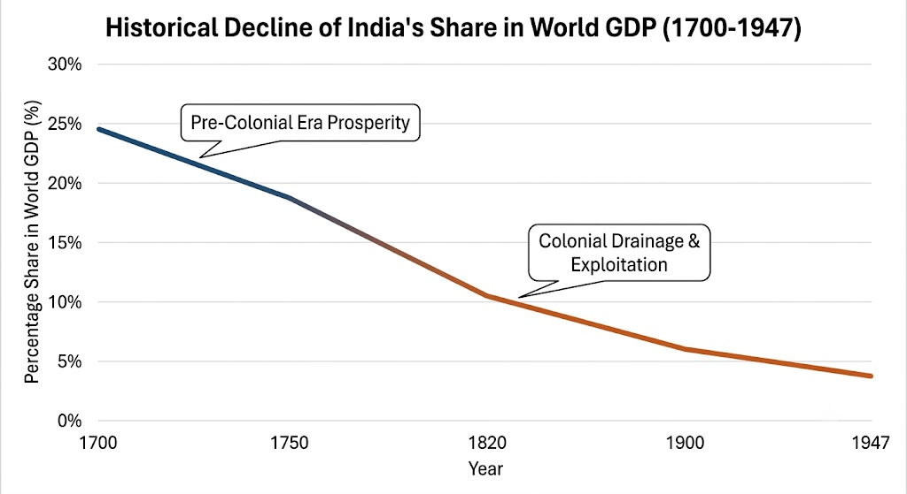

MJC-7 Economics Notes
| Indian | |
| Not started |
📖 इकाई-1: आर्थिक विकास (Economic Development)
📘 अध्याय 1.1: विकास का ढांचा (Growth Framework)
📌 1.1.1 स्वतंत्रता के समय भारतीय अर्थव्यवस्था की विशेषताएं (Features of Indian Economy at Independence)
💡 1. ऐतिहासिक पृष्ठभूमि एवं औपनिवेशिक शोषण (Historical Context & Colonial Exploitation)
किसी भी देश की वर्तमान आर्थिक स्थिति उसकी ऐतिहासिक जड़ों से जुड़ी होती है। 15 अगस्त 1947 को जब भारत स्वतंत्र हुआ, तो हमें एक विकसित या समृद्ध अर्थव्यवस्था नहीं मिली, बल्कि 200 वर्षों (1757 से 1947) के ब्रिटिश औपनिवेशिक शासन द्वारा शोषित, गतिहीन और जर्जर अर्थव्यवस्था विरासत में मिली।
- ईस्ट इंडिया कंपनी और ब्रिटिश ताज का शासन: 1757 के प्लासी के युद्ध के बाद अंग्रेजों ने भारत को अपने साम्राज्यवादी हितों की पूर्ति का साधन बनाया। ब्रिटिश आर्थिक नीतियों का मुख्य उद्देश्य भारतीय अर्थव्यवस्था का विकास करना नहीं, बल्कि ब्रिटेन के औद्योगिक क्रांति (Industrial Revolution) के लिए भारत को कच्चे माल का आपूर्तिकर्ता (Supplier of Raw Materials) और ब्रिटेन में निर्मित वस्तुओं का उपभोक्ता बाजार (Market for Finished Goods) बनाना था।
- एंगस मैडिसन का अध्ययन (Angus Maddison Data): प्रसिद्ध आर्थिक इतिहासकार एंगस मैडिसन के आंकड़ों के अनुसार:
- वर्ष 1700 ईस्वी में: वैश्विक जीडीपी (Global GDP) में भारत का योगदान लगभग 24.4% था (भारत दुनिया की सबसे बड़ी अर्थव्यवस्थाओं में से एक था)।
- वर्ष 1947 तक: अंग्रेजों के निष्कासन और शोषण के कारण यह घटकर मात्र 3% से 4% रह गया।
{kind=link}

🔍 2. 1947 में भारतीय अर्थव्यवस्था की मुख्य विशेषताएं (विस्तृत व्याख्या)
1947 में स्वतंत्रता के समय भारतीय अर्थव्यवस्था की मुख्य विशेषताओं को निम्नलिखित 7 प्रमुख स्तम्भों में गहराई से समझा जा सकता है:
1947 में भारतीय अर्थव्यवस्था
│
┌──────────────┬──────────────┬─────────┴────────┬──────────────┬──────────────┐
▼ ▼ ▼ ▼ ▼ ▼
गतिहीन अति-पिछड़ी वि-औद्योगीकरण निराशाजनक धन का निष्कासन विदेशी व्यापार
अर्थव्यवस्था कृषि (De-industrial) सामाजिक सूचकांक (Drain of Wealth) का स्वरूप(A) गतिहीन और अल्पविकसित अर्थव्यवस्था (Stagnant & Underdeveloped Economy)
- गतिहीन अर्थव्यवस्था का अर्थ: एक ऐसी अर्थव्यवस्था जिसमें लंबे समय तक प्रति व्यक्ति आय और राष्ट्रीय आय में कोई उल्लेखनीय वृद्धि न हो रही हो, या वृद्धि दर अत्यंत धीमी/नगण्य हो।
- सच्चिदानंद और अन्य अर्थशास्त्रियों के अनुमान: ब्रिटिश काल के दौरान भारत सरकार ने कभी भी राष्ट्रीय आय का आधिकारिक आकलन करने का गंभीर प्रयास नहीं किया। हालांकि, वी.के.आर.वी. राव (V.K.R.V. Rao), दादाभाई नौरोजी, और विलियम डिग्बी जैसे अर्थशास्त्रियों ने अपने निजी स्तर पर अनुमान लगाए।
- वृद्धि दर के आंकड़े: 20वीं शताब्दी के प्रथमार्ध (1900 से 1947) के दौरान:
- भारत की कुल राष्ट्रीय आय (National Income) की वृद्धि दर 2% प्रतिवर्ष से भी कम थी।
- भारत की प्रति व्यक्ति आय (Per Capita Income) की वृद्धि दर मात्र 0.5% प्रतिवर्ष थी।
- निष्कर्ष: जनसंख्या वृद्धि की तुलना में उत्पादन वृद्धि इतनी कम थी कि औसतन एक सामान्य भारतीय की क्रय शक्ति और जीवन स्तर लगातार गिर रहा था।
(B) अत्यंत पिछड़ी एवं शोषित कृषि प्रणाली (Backward & Exploited Agricultural Sector)
1947 में भारतीय अर्थव्यवस्था पूरी तरह से कृषि प्रधान थी, लेकिन कृषि क्षेत्र स्वयं अत्यंत दयनीय स्थिति में था।
- अत्यधिक जनसंख्या का बोझ: देश की कुल कार्यशील जनसंख्या (Workforce) का लगभग 72% से 75% भाग सीधे कृषि पर निर्भर था। हालांकि, इतने बड़े कार्यबल के बावजूद कुल जीडीपी में कृषि का योगदान केवल 50% के आसपास था, जो कृषि की कम उत्पादकता (Low Productivity) को दर्शाता है।
- शोषक भू-राजस्व प्रणालियां (Land Revenue Systems):
- जमींदारी प्रथा (Zamindari System): विशेष रूप से बंगाल, बिहार और ओडिशा प्रेसीडेंसी में लागू। भूमि का मालिकाना हक जमींदारों को दिया गया था। उनका एकमात्र उद्देश्य किसानों से अधिकतम लगान (Lagan) वसूलना था। खेती की तकनीक या सिंचाई में सुधार करने में जमींदारों या ब्रिटिश सरकार की कोई रुचि नहीं थी।
- रैयतवाड़ी और महालवाड़ी व्यवस्था: इनमें भी कर की दरें इतनी अधिक थीं कि किसान सदैव कर्ज के जाल (Indebtedness) में फंसे रहते थे।
- कृषि का जबर्दस्ती व्यवसायीकरण (Commercialisation of Agriculture):
- किसानों को अपनी इच्छा से खाद्यान्न (चावल, गेहूं) उगाने की स्वतंत्रता नहीं थी।
- ब्रिटेन की कपड़ा मिलों के लिए नील (Indigo), जूट और कपास जैसी नकदी फसलें (Cash Crops) उगाने के लिए किसानों को बाध्य किया जाता था।
- इसका प्रत्यक्ष दुष्परिणाम यह हुआ कि देश में खाद्यान्न की भारी कमी हो गई और बार-बार अकाल (Famines) पड़ने लगे। 1943 का बंगाल अकाल (Bengal Famine) इसका सबसे वीभत्स उदाहरण था, जिसमें भूख के कारण 30 लाख से अधिक लोग मारे गए थे।
- सिंचाई और तकनीक का अभाव: सिंचाई पूरी तरह मानसून पर निर्भर थी। रासायनिक उर्वरकों (Chemical Fertilizers), उन्नत बीजों और आधुनिक उपकरणों का प्रयोग शून्य के बराबर था।

(C) वि-औद्योगीकरण और पारंपरिक उद्योगों का पतन (De-industrialization & Systematic Ruin of Handicrafts)
ब्रिटिश शासन से पहले भारत अपने वस्त्र उद्योग, विशेष रूप से ढाका की मलमल (Muslin of Dacca), रेशम, संगमरमर की नक्काशी और धातु शिल्प के लिए दुनिया भर में प्रसिद्ध था। लेकिन ब्रिटिश नीतियों ने जानबूझकर भारत का वि-औद्योगीकरण (De-industrialization) किया।
- भेदभावपूर्ण शुल्क नीति (Discriminatory Tariff Policy):
- भारत से ब्रिटेन भेजे जाने वाले कच्चे माल (जैसे कच्चा सूत, जूट) पर शून्य निर्यात शुल्क (Zero Export Duty) लगाया गया।
- ब्रिटेन की मशीनों से बने सामानों के भारत में आयात पर शून्य आयात शुल्क (Zero Import Duty) रखा गया।
- लेकिन जब भारतीय हस्तशिल्पकार अपने तैयार सामान को ब्रिटेन या अन्य देशों में बेचने की कोशिश करते थे, तो उन पर भारी कर (Tariff) लगा दिया जाता था ताकि वे प्रतिस्पर्धी न रह सकें।
- मशीन-निर्मित सामान से असमान प्रतिस्पर्धा: ब्रिटेन की इंडस्ट्रियल क्रांति की मशीनों से बना सामान बहुत सस्ता और फिनिश्ड होता था। भारत के हाथ से काम करने वाले कारीगर उनका मुकाबला नहीं कर सके।
- लाखों कारीगरों का कृषि की ओर पलायन: जब पारंपरिक कुटीर उद्योग नष्ट हो गए, तो लाखों जुलाहे, बड़ाई और कारीगर बेरोजगार होकर वापस गांवों की ओर लौटे, जिससे कृषि भूमि पर जनसंख्या का दबाव और अधिक बढ़ गया (इसे 'कृषिकीकरण' या Agrarianization कहा जाता है)।
- बुनियादी एवं भारी उद्योगों का अभाव: स्वतंत्रता के समय देश में कैपिटल गुड्स (मशीनें बनाने वाले उद्योग) नाममात्र के थे। केवल 1907 में स्थापित टाटा आयरन एंड स्टील कंपनी (TISCO) जैसी कुछ अपवाद स्वरूप इकाइयां, और कुछ सूती/जूट मिलें ही अस्तित्व में थीं।
(D) अत्यधिक गरीबी और निराशाजनक सामाजिक-आर्थिक सूचकांक (High Poverty & Low Social Indicators)
ब्रिटिश शासन ने भारत की बहुसंख्यक आबादी को अत्यधिक निर्धनता के गर्त में धकेल दिया था। 1947 के समय के सामाजिक आंकड़े इस बात का प्रत्यक्ष प्रमाण हैं:
| सामाजिक एवं आर्थिक सूचक (Indicator) | 1947 की वास्तविक स्थिति (Status in 1947) | इसका आर्थिक एवं व्यावहारिक अर्थ (Economic Impact) |
|---|---|---|
| साक्षरता दर (Overall Literacy Rate) | मात्र 16% | देश की 84% आबादी लिखना-पढ़ना तक नहीं जानती थी, जिससे मानव पूंजी निर्माण (Human Capital Formation) नाममात्र का था। |
| महिला साक्षरता (Female Literacy) | मात्र 7% | समाज में महिलाओं की आर्थिक भागीदारी नगण्य थी और उनका सामाजिक शोषण चरम पर था। |
| औसत जीवन प्रत्याशा (Life Expectancy) | मात्र 32 वर्ष | स्वास्थ्य सुविधाओं के अभाव और कुपोषण के कारण एक औसतन भारतीय केवल 32 वर्ष ही जीवित रह पाता था (आज यह ~70 वर्ष है)। |
| शिशु मृत्यु दर (Infant Mortality Rate) | 218 प्रति 1,000 | पैदा होने वाले प्रति 1,000 बच्चों में से 218 बच्चे 1 वर्ष की आयु पूरी करने से पहले ही दम तोड़ देते थे (आज यह ~27 है)। |
| व्यापक गरीबी (Poverty Ratio) | 80% से अधिक | देश की 80% से अधिक जनसंख्या बुनियादी आवश्यकताओं (रोटी, कपड़ा, मकान, स्वास्थ्य) से वंचित थी। |

(E) धन का निष्कासन सिद्धांत (Theory of Drain of Wealth)
- सिद्धांत के प्रतिपादक: भारत के 'ग्रैंड ओल्ड मैन' दादाभाई नौरोजी (Dadabhai Naoroji) ने 1867 में अपनी ऐतिहासिक पुस्तक "Poverty and Un-British Rule in India" में 'धन के निष्कासन' (Drain of Wealth) के सिद्धांत का प्रतिपादन किया।
- धन का निष्कासन क्या था?
- भारत का विदेशी व्यापार हमेशा से सरप्लस (Export > Import) में रहता था, यानी भारत सामान ज्यादा बेचता था और खरीदता कम था।
- सामान्य परिस्थितियों में इस व्यापार अधिशेष से देश में सोना-चांदी आना चाहिए था और भारत समृद्ध होना चाहिए था।
- लेकिन अंग्रेजों ने इस व्यापार सरप्लस का पैसा कभी भारत में निवेश नहीं किया।
- पैसा कहाँ जाता था? (Home Charges & Administrative Drain):
- ब्रिटेन में बैठे भारतीय कार्यालय (Home Office) के प्रशासनिक खर्चों को चुकाने में।
- ब्रिटिश सैन्य अधिकारियों और प्रशासनिक कर्मचारियों की पेंशन और वेतन देने में।
- ब्रिटेन द्वारा लड़े जाने वाले विदेशी युद्धों का खर्च उठाने में।
- विदेशी कंपनियों द्वारा अर्जित लाभ को बाहर भेजने में।
(F) विदेशी व्यापार का औपनिवेशिक स्वरूप (Colonial Pattern of Foreign Trade)
1947 में भारत के अंतरराष्ट्रीय व्यापार की दिशा और संरचना पूरी तरह ब्रिटेन के हाथों में केंद्रित थी:
- निर्यात की संरचना (Composition of Exports): भारत प्राथमिक उत्पादों और कच्चे माल जैसे- कच्चा सूत, जूट, कच्ची रेशम, चाय, इंडिगो (नील), और मसाले का निर्यातक था।
- आयात की संरचना (Composition of Imports): भारत ब्रिटेन की फैक्ट्रियों में बने तैयार सामानों जैसे- सूती कपड़े, ऊनी वस्त्र, मशीनरी, और उपभोक्ता वस्तुओं का आयातक था।
- व्यापार की दिशा (Direction of Trade): भारत के कुल विदेशी व्यापार का 50% से अधिक हिस्सा केवल ब्रिटेन के साथ होता था। शेष थोड़ा-बहुत व्यापार चीन, फारस (ईरान) और श्रीलंका के साथ सीमित था।
- स्वेज नहर का प्रभाव (Suez Canal - 1869): 1869 में स्वेज नहर के खुलने से ब्रिटेन और भारत के बीच परिवहन की लागत और समय काफी घट गया, जिससे अंग्रेजों के लिए भारत का आर्थिक शोषण करना और भी आसान हो गया।
(G) संकुचित एवं स्वार्थी बुनियादी ढांचा (Limited & Self-Serving Infrastructure)
यह सच है कि ब्रिटिश काल के दौरान भारत में रेलवे (1853), बंदरगाह, डाक-तार (Post & Telegraph), और सड़कें विकसित की गईं, लेकिन इनका उद्देश्य भारतीय अर्थव्यवस्था का विकास करना बिल्कुल नहीं था।
- रेलवे का वास्तविक उद्देश्य:
- भारत के दूर-दराज के ग्रामीण इलाकों से कच्चा माल (जैसे जूट, कपास) एकत्र करके बंदरगाहों तक पहुंचाना ताकि उसे ब्रिटेन भेजा जा सके।
- ब्रिटेन से आयातित तैयार माल को भारत के अंदरूनी बाजारों तक जल्दी पहुंचाना।
- किसी भी विद्रोह या आंदोलन को दबाने के लिए ब्रिटिश सेना की त्वरित आवाजाही को सक्षम बनाना।
- सड़कों और बंदरगाहों की कमी: ग्रामीण इलाकों को बाजारों से जोड़ने वाली पक्की सड़कों का सर्वथा अभाव था। मानसून के दौरान गांव पूरी तरह कट जाते थे।
🧠 "याद रखने योग्य बातें" (Mind Map & Key Takeaways)
परीक्षा की दृष्टि से 1.1.1 के सबसे महत्वपूर्ण बिंदु जिन्हें उत्तर में लिखना अनिवार्य है:
- अर्थव्यवस्था का स्वरूप: गतिहीन (Stagnant), अर्ध-सामंती (Semi-Feudal), और औपनिवेशिक (Colonial)।
- आर्थिक विकास दर: 1900-1947 के दौरान राष्ट्रीय आय वृद्धि दर <2% और प्रति व्यक्ति आय वृद्धि दर ~0.5%।
- कृषि की स्थिति: 72-75% जनसंख्या निर्भर, जमींदारी प्रथा, निम्न उत्पादकता, और 1943 का बंगाल अकाल।
- औद्योगिक स्थिति: वि-औद्योगीकरण (De-industrialization), हस्तशिल्प का पतन, और भारी/कैपिटल गुड्स उद्योगों की अनुपस्थिति।
- सामाजिक स्थिति: साक्षरता 16% (महिला 7%), जीवन प्रत्याशा 32 वर्ष, शिशु मृत्यु दर 218/1000।
- शोषण का मुख्य सिद्धांत: दादाभाई नौरोजी का 'धन का निष्कासन' (Drain of Wealth)।
📝 विश्वविद्यालय स्तर के अभ्यास प्रश्न (University Exam Level Questions)
भाग-क: वस्तुनिष्ठ प्रश्न (MCQs - 1 अंक)
- वर्ष 1700 में विश्व की कुल जीडीपी में भारत का योगदान लगभग कितना था?
- (a) 10%
- (b) 24.4%
- (c) 5%
- (d) 50%
- [उत्तर: (b) 24.4%]
- स्वतंत्रता के समय (1947) भारत की महिला साक्षरता दर कितनी थी?
- (a) 16%
- (b) 20%
- (c) 7%
- (d) 12%
- [उत्तर: (c) 7%]
- 'Poverty and Un-British Rule in India' नामक प्रसिद्ध पुस्तक के लेखक कौन हैं?
- (a) डॉ. बी.आर. अम्बेडकर
- (b) दादाभाई नौरोजी
- (c) जवाहरलाल नेहरू
- (d) आर.सी. दत्त
- [उत्तर: (b) दादाभाई नौरोजी]
- 1869 में किस नहर के खुलने से ब्रिटेन और भारत के बीच व्यापारिक परिवहन बहुत आसान हो गया?
- (a) पानामा नहर
- (b) स्वेज नहर
- (c) कील नहर
- (d) सु नहर
- [उत्तर: (b) स्वेज नहर]
भाग-ख: लघु उत्तरीय प्रश्न (Short Answer Questions - 4/5 अंक)
- 'कृषि के जबरन व्यवसायीकरण' (Commercialisation of Agriculture) से आप क्या समझते हैं? 1943 के बंगाल अकाल में इसकी क्या भूमिका थी?
- ब्रिटिश काल में भारत की 'भेदभावपूर्ण शुल्क नीति' (Discriminatory Tariff Policy) ने भारतीय हस्तशिल्प को कैसे नष्ट किया?
- 'धन का निष्कासन' (Drain of Wealth) सिद्धांत की व्याख्या संक्षेप में कीजिए।
भाग-ग: दीर्घ उत्तरीय प्रश्न (Long Answer Questions - 10/12 अंक)
- "15 अगस्त 1947 को भारत को विरासत में एक जर्जर, गतिहीन और औपनिवेशिक अर्थव्यवस्था मिली।" इस कथन के संदर्भ में स्वतंत्रता के समय भारतीय अर्थव्यवस्था की प्रमुख विशेषताओं की विस्तृत और आलोचनात्मक विवेचना कीजिए।
- ब्रिटिश औपनिवेशिक नीतियों ने भारतीय कृषि और औद्योगिक ढांचे को किस प्रकार प्रभावित किया? विस्तार से उत्तर दीजिए।
📘 अध्याय 1.1: विकास का ढांचा (Growth Framework)
📌 1.1.2 संरचनात्मक परिवर्तन और नीतिगत शासन (Structural Change & Policy Regimes)
💡 1. आसान भाषा में विषय प्रवेश (Simple Introduction)
जब 1947 में हमारा देश आजाद हुआ, तो देश के नेताओं और अर्थशास्त्रियों के सामने सबसे बड़ा सवाल यह था कि:
- देश की गरीबी को कैसे मिटाया जाए?
- खेती, कारखानों और व्यापार को कैसे बढ़ाया जाए?
इसके लिए सरकार ने समय-समय पर दो बड़े काम किए:
- पहला: नीतिगत शासन (Policy Regimes): इसका मतलब है कि देश की अर्थव्यवस्था को चलाने के लिए सरकार ने कौन-कौन से नियम, कानून और नीतियां (Rules & Policies) बनाईं।
- दूसरा: संरचनात्मक परिवर्तन (Structural Change): इसका मतलब है कि देश की कमाई (GDP) और लोगों के रोजगार में खेती (Agriculture), कारखानों (Industry) और सेवाओं (Services) का हिस्सा समय के साथ कैसे बदला।
आइए, इन दोनों चीजों को बिल्कुल आसान और मजेदार तरीके से एक-एक करके विस्तार से समझते हैं।
🏗️ भाग 1: भारत में नीतिगत शासन (Policy Regimes in India)
भारत की आजादी से लेकर आज तक के आर्थिक इतिहास को मुख्य रूप से दो बड़े दौर (Two Policy Eras) में बांटा जाता है:
भारत का आर्थिक इतिहास
│
┌────────────────────────────┴────────────────────────────┐
▼ ▼
1. पहला दौर: सरकारी नियंत्रण का दौर 2. दूसरा दौर: खुली अर्थव्यवस्था का दौर
(1951 से 1991 - पंचवर्षीय योजनाएं) (1991 से आज तक - LPG सुधार)🔹 (A) पहला नीतिगत दौर: नियोजित विकास और सरकारी नियंत्रण (1951 से 1991)
1947 में आजादी के बाद हमारे देश के पहले प्रधानमंत्री पंडित जवाहरलाल नेहरू और नीति निर्माताओं ने तय किया कि भारत न तो पूरी तरह अमेरिका जैसी पूंजीवादी (Capitalist) अर्थव्यवस्था बनेगा और न ही रूस जैसी पूरी तरह कम्युनिस्ट (Communist)। हमने मिश्रित अर्थव्यवस्था (Mixed Economy) को चुना, जहां सरकारी और प्राइवेट दोनों क्षेत्र मिलकर काम करेंगे।
इस दौर की 4 सबसे प्रमुख बातें निम्नलिखित थीं:
- पंचवर्षीय योजनाएं (Five Year Plans):
- सरकार ने देश के विकास के लिए 5-5 साल के लक्ष्य तय किए। 1951 में पहली पंचवर्षीय योजना शुरू हुई।
- 1st Plan (1951-56): इसमें सबसे ज्यादा ध्यान खेती और सिंचाई पर दिया गया (जैसे भाखड़ा नांगल बांध बनाना)।
- 2nd Plan (1956-61): इसे 'महालनोबिस मॉडल' कहते हैं। इसमें सबसे ज्यादा ध्यान बड़े-बड़े सरकारी कारखानों (जैसे भिलाई, रौरकेला और दुर्गापुर के स्टील प्लांट) पर दिया गया।
- सार्वजनिक क्षेत्र (Public Sector / PSUs) की प्रधानता:
- सरकार का मानना था कि भारी उद्योगों, बिजली, रेलवे, बैंक और स्टील जैसे बड़े कामों को केवल सरकार ही चला सकती है, क्योंकि प्राइवेट लोगों के पास उस समय इतना पैसा नहीं था।
- इसलिए अर्थव्यवस्था की कमान सरकारी कंपनियों (जैसे SAIL, BHEL, NTPC) के हाथों में दी गई।
- आयात प्रतिस्थापन की नीति (Import Substitution Policy):
- इसका बहुत ही आसान मतलब है: "विदेशों से सामान कम खरीदो (आयात कम करो) और जो सामान बाहर से मंगाते हो, उसे अपने ही देश में बनाओ।"
- सरकार ने बाहर से आने वाले सामानों पर बहुत भारी टैक्स (Customs Duty) लगा दिया ताकि विदेशी सामान भारत में महंगा हो जाए और लोग भारत में बनी चीजें ही खरीदें। इसका मकसद देश के नए कारखानों को विदेशी कंपनियों की होड़ से बचाना था।
- लाइसेंस-परमिट राज (Licensing Raj):
- इस दौर में अगर किसी प्राइवेट व्यक्ति को नया कारखाना खोलना हो, कोई नई चीज बनानी हो या अपनी फैक्ट्री को बड़ा करना हो, तो उसे सरकार से दर्जनों तरह के लाइसेंस और परमिट लेने पड़ते थे।
- नतीजा: इससे सरकारी दफ्तरों में घूसखोरी, लालफीताशाही (Red Tapism) और देरी बहुत बढ़ गई।
📌 इस दौर का असर: इस 1951-1991 वाले दौर से देश में बुनियादी कारखाने बने और हरित क्रांति (Green Revolution) से अनाज की कमी दूर हुई। लेकिन अत्यधिक सरकारी नियंत्रण के कारण देश की विकास दर बहुत धीमी रह गई (जिसे अर्थशास्त्री राज कृष्णा ने 'हिंदू वृद्धि दर' / ~3.5% प्रतिवर्ष कहा था)।
🔹 (B) दूसरा नीतिगत दौर: 1991 के एलपीजी (LPG) सुधार (1991 से वर्तमान)
1990-91 आते-आते भारत एक बहुत बड़े आर्थिक संकट में फंस गया। भारत के पास विदेशों से तेल और जरूरी सामान खरीदने के लिए केवल 2 हफ्ते का विदेशी मुद्रा भंडार (Foreign Exchange Reserve) बचा था। देश पर कर्ज बहुत बढ़ गया था।
तब 1991 में तत्कालीन प्रधानमंत्री पी.वी. नरसिम्हा राव और वित्त मंत्री डॉ. मनमोहन सिंह ने नया आर्थिक मॉडल (LPG Model) लागू किया।

LPG का पूरा मतलब और आसान व्याख्या:
- L – उदारीकरण (Liberalization):
- आसान शब्द: "नियमों को ढीला और आसान बनाना।"
- लाइसेंस-परमिट राज को लगभग खत्म कर दिया गया। अब केवल 5-6 उद्योगों (जैसे हथियार, शराब, दवाएं) को छोड़कर किसी भी काम के लिए सरकारी लाइसेंस की जरूरत नहीं रही।
- व्यापार करना बहुत आसान बना दिया गया।
- P – निजीकरण (Privatization):
- आसान शब्द: "सरकारी कंपनियों को प्राइवेट हाथों या जनता को बेचना।"
- जो सरकारी कंपनियां लगातार घाटे में चल रही थीं, सरकार ने उनके शेयर बेचे और प्राइवेट सेक्टर को आगे आने का पूरा मौका दिया।
- बैंक, टेलीकॉम, एविएशन (हवाई जहाज) जैसे क्षेत्रों को प्राइवेट कंपनियों के लिए खोल दिया गया (जैसे एयरटेल, टाटा, रिलायंस आदि)।
- G – वैश्वीकरण (Globalization):
- आसान शब्द: "भारतीय अर्थव्यवस्था को दुनिया के बाजारों से जोड़ना।"
- बाहर की विदेशी कंपनियों (Foreign Companies) को भारत में पैसा लगाने (FDI - Foreign Direct Investment) की छूट दी गई।
- विदेशी सामानों पर लगने वाला भारी टैक्स घटा दिया गया, जिससे भारत का व्यापार पूरी दुनिया से होने लगा।
📊 भाग 2: भारतीय अर्थव्यवस्था में संरचनात्मक परिवर्तन (Structural Change)
💡 संरचनात्मक परिवर्तन क्या होता है?
किसी भी देश की पूरी अर्थव्यवस्था को मुख्य रूप से 3 हिस्सों (Sectors) में बांटा जाता है:
- प्राथमिक क्षेत्र (Primary Sector / कृषि): खेती, पशुपालन, मछली पालन, जंगल, और खान से खनिज निकालना।
- द्वितीयक क्षेत्र (Secondary Sector / उद्योग): छोटी-बड़ी फैक्ट्रियां, सामान का निर्माण (Manufacturing), मकान और सड़कें बनाना (Construction)।
- तृतीयक क्षेत्र (Tertiary Sector / सेवा क्षेत्र): बैंक, दुकान, स्कूल, अस्पताल, ट्रांसपोर्ट, मोबाइल-इंटरनेट (IT) और पर्यटन।
📈 आजादी से आज तक क्या-क्या बदलाव आया? (1950 बनाम आज)
दुनिया के किसी भी देश के विकास का नियम यह होता है कि जैसे-जैसे देश तरक्की करता है, खेती का हिस्सा घटता है और कारखानों तथा सेवाओं का हिस्सा बढ़ता है।
भारत में आजादी (1950-51) से लेकर आज तक जीडीपी और रोजगार में यह बदलाव आया है:
| क्षेत्र (Economic Sector) | 1950-51 में कुल कमाई (GDP) में हिस्सा | आज (Present) कुल कमाई (GDP) में हिस्सा | आज (Present) कितने % लोगों को रोजगार मिलता है? |
|---|---|---|---|
| 1. कृषि क्षेत्र (Agriculture) | ~56% (आधे से ज्यादा) | ~15% से 16% (बहुत कम) | ~43% (अब भी बहुत ज्यादा लोग) |
| 2. उद्योग क्षेत्र (Industry) | ~15% (बहुत छोटा) | ~28% से 30% | ~25% |
| 3. सेवा क्षेत्र (Services) | ~29% | ~53% से 55% (आधे से ज्यादा) | ~32% |

⚠️ भारत के बदलाव में सबसे बड़ी अजीब बात (India's Structural Paradox)
सामान्यतः दुनिया के विकसित देशों (जैसे अमेरिका, जापान या चीन) में विकास का रास्ता ऐसा रहा है:
लेकिन भारत में एक अनोखा और अलग बदलाव हुआ:
- भारत में क्या हुआ? भारत खेती से सीधे सेवा क्षेत्र (IT, सॉफ्टवेयर, कॉल सेंटर, बैंकिंग) में छलांग लगा गया। हमारे देश में कारखानों (Manufacturing Sector) का उतना विकास हो ही नहीं पाया जितना चीन या कोरिया में हुआ।
- इसकी सबसे बड़ी समस्या क्या है? (The Main Problem)
- आज हमारे देश की कुल कमाई (GDP) में सेवा क्षेत्र 54% से ज्यादा योगदान देता है, लेकिन यह केवल 32% लोगों को ही नौकरी दे पाता है (क्योंकि IT, बैंक या डॉक्टर बनने के लिए बहुत ज्यादा पढ़ाई-लिखाई और स्किल चाहिए)।
- दूसरी तरफ, खेती केवल 15% कमाई देती है, लेकिन देश के 43% लोग आज भी खेती पर ही निर्भर हैं!
- इसका नतीजा यह है कि खेती में छद्म या अदृश्य बेरोजगारी (Disguised Unemployment) बहुत ज्यादा है। मतलब खेत में जरूरत 2 लोगों की है, लेकिन लगे हुए परिवार के 5 लोग हैं। इससे किसानों की कमाई कम रह जाती है।
🧠 "याद रखने योग्य बातें" (Mind Map & Quick Recap)
परीक्षा में अच्छे नंबर पाने के लिए इन 5 मुख्य बातों को हमेशा याद रखें:
- दो नीतिगत दौर:
- 1951-1991: पंचवर्षीय योजनाएं, सरकारी कंपनियों की प्रधानता, आयात प्रतिस्थापन और लाइसेंस-परमिट राज।
- 1991 के बाद: उदारीकरण (Liberalization), निजीकरण (Privatization) और वैश्वीकरण (Globalization)।
- जीडीपी में बदलाव:
- खेती का हिस्सा 56% से घटकर ~16% हो गया।
- सेवा क्षेत्र का हिस्सा 29% से बढ़कर ~54% हो गया (सबसे बड़ा हिस्सा)।
- रोजगार की असंतुलित स्थिति: देश के ~43% लोग अब भी खेती में लगे हैं, जो केवल 16% जीडीपी पैदा करती है।
- भारत का अनोखा मॉडल: भारत कारखानों (Manufacturing) के चरण को लांघकर सीधे खेती से सेवा क्षेत्र (Services) का राजा बन गया।
📝 विश्वविद्यालय स्तर के अभ्यास प्रश्न (University Exam Level Questions)
भाग-क: वस्तुनिष्ठ प्रश्न (MCQs - 1 अंक)
- भारत में पहली पंचवर्षीय योजना किस वर्ष शुरू की गई थी?
- (a) 1947
- (b) 1951
- (c) 1956
- (d) 1961
- [उत्तर: (b) 1951]
- 1991 के आर्थिक सुधारों के समय LPG मॉडल में 'P' का क्या अर्थ है?
- (a) Public (सार्वजनिक)
- (b) Production (उत्पादन)
- (c) Privatization (निजीकरण)
- (d) Planning (नियोजन)
- [उत्तर: (c) Privatization (निजीकरण)]
- वर्तमान में भारत की जीडीपी (GDP) में सबसे बड़ा हिस्सा किस क्षेत्र का है?
- (a) कृषि क्षेत्र (Agriculture)
- (b) उद्योग क्षेत्र (Industry)
- (c) सेवा क्षेत्र (Services)
- (d) खनन क्षेत्र (Mining)
- [उत्तर: (c) सेवा क्षेत्र (Services)]
- 1951-1991 के दौरान भारत की धीमी आर्थिक विकास दर (~3.5%) को अर्थशास्त्री राज कृष्णा ने क्या नाम दिया था?
- (a) नेहरूवादी वृद्धि दर
- (b) हिंदू वृद्धि दर
- (c) कृषि वृद्धि दर
- (d) पारंपरिक वृद्धि दर
- [उत्तर: (b) हिंदू वृद्धि दर]
भाग-ख: लघु उत्तरीय प्रश्न (Short Answer Questions - 4/5 अंक)
- 'आयात प्रतिस्थापन' (Import Substitution) की नीति क्या थी? 1951-1991 के दौरान इसका भारत पर क्या प्रभाव पड़ा?
- 1991 के उदारीकरण (Liberalization) के तहत भारत में कौन-कौन से मुख्य बदलाव किए गए?
- भारत में कृषि क्षेत्र में पाई जाने वाली 'अदृश्य/छद्म बेरोजगारी' (Disguised Unemployment) को संक्षेप में समझाइए।
भाग-ग: दीर्घ उत्तरीय प्रश्न (Long Answer Questions - 10/12 अंक)
- "1991 के आर्थिक सुधार (LPG Reforms) भारत के आर्थिक इतिहास में एक बड़ा मोड़ थे।" इस कथन की समीक्षा कीजिए तथा 1951-1991 के नीतिगत शासन से इसकी तुलना कीजिए।
- स्वतंत्रता के बाद से भारतीय अर्थव्यवस्था में हुए संरचनात्मक परिवर्तनों (Structural Changes) का विस्तार से वर्णन कीजिए। भारत में कृषि से सीधे सेवा क्षेत्र की ओर हुए झुकाव की चुनौतियों की विवेचना कीजिए।
📘 अध्याय 2.1: कृषि सुधार (Agricultural Reforms)
📌 2.1.1 भूमि सुधार और हरित/इंद्रधनुषी क्रांति (Land Reforms, Green & Rainbow Revolution)
💡 1. विषय प्रवेश (Introduction)
1947 में आजादी के बाद भारत के सामने सबसे बड़ी चुनौती देश की भूखी आबादी का पेट भरना था। उस समय भारतीय कृषि दो बड़ी बीमारियों से ग्रसित थी:
- संस्थागत बीमारी (Institutional Problem): अंग्रेजों की बनाई ज़मींदारी प्रथा, जिसमें खेत किसी और का था और पसीना कोई और बहाता था।
- तकनीकी बीमारी (Technological Problem): खेती के पुराने तरीके, अच्छे बीजों और सिंचाई की भारी कमी।
इन दोनों बीमारियों को ठीक करने के लिए भारत सरकार ने दो बड़े कदम उठाए:
- संस्थागत सुधार: जिन्हें भूमि सुधार (Land Reforms) कहा गया।
- तकनीकी सुधार: जिन्हें हरित क्रांति (Green Revolution) और बाद में इंद्रधनुषी क्रांति (Rainbow Revolution) कहा गया।
आइए, इन तीनों को एक-एक करके विस्तार से और बहुत आसान भाषा में समझते हैं।
🌾 भाग 1: भूमि सुधार (Land Reforms)
💡 भूमि सुधार क्या है?
आसान शब्दों में कहें तो "ज़मीन के मालिकाना हक और उसके इस्तेमाल से जुड़े कानूनों में ऐसा बदलाव करना, जिससे किसानों का शोषण रुके और खेती की पैदावार बढ़े।"
भूमि सुधार का मुख्य नारा था: "जो जोतेगा, वही बोएगा, वही ज़मीन का मालिक होगा!" (Land to the Tiller)
📌 भूमि सुधार के 4 मुख्य स्तंभ (4 Major Pillars of Land Reforms)

- मध्यस्थों (जमींदारों) का उन्मूलन (Abolition of Intermediaries):
- क्या किया गया: आजादी के तुरंत बाद कानून बनाकर जमींदारी, रैयतवाड़ी और महालवाड़ी प्रथाओं को पूरी तरह खत्म कर दिया गया।
- नतीजा: सरकार और किसानों के बीच से बिचौलिए (जमींदार) हट गए। लगभग 2 करोड़ किसानों को उनकी ज़मीन का सीधा मालिकाना हक मिला।
- काश्तकारी सुधार (Tenancy Reforms):
- जो किसान दूसरों की ज़मीन पर भाड़े (किराए) पर खेती करते थे, उन्हें 'काश्तकार' या 'पट्टेदार' कहा जाता था। जमींदार उनसे मनमाना लगान वसूलते थे और जब चाहते थे खेत से बेदखल कर देते थे।
- इसके तहत 3 मुख्य काम हुए:
- लगान का नियमन (Regulation of Rent): उपज के 1/4 या 1/3 हिस्से से ज्यादा लगान वसूलने पर रोक लगा दी गई।
- दखलकारी अधिकार (Security of Tenure): काश्तकारों को ज़मीन से बेदखल करने पर रोक लगाई गई।
- मालिकाना हक: कई राज्यों में लंबे समय से खेती कर रहे काश्तकारों को ज़मीन का मालिक बना दिया गया।
- ज़मीन की हदबंदी का कानून (Land Ceiling Act):
- क्या मतलब है: सरकार ने कानून बनाकर तय कर दिया कि एक परिवार अपने पास अधिकतम कितनी एकड़ ज़मीन रख सकता है (जैसे 15 एकड़ या 30 एकड़)।
- मकसद: जो ज़मीन तय सीमा से फालतू (Surplus Land) होगी, सरकार उसे अपने कब्जे में लेकर ज़मीनहीन और गरीब किसानों में बांट देगी।
- खेतों की चकबंदी (Consolidation of Holdings):
- समस्या क्या थी: भारत में एक ही किसान के पास 1 बीघा ज़मीन उत्तर में थी, तो 1 बीघा दक्षिण में (खेत बिखरे हुए थे)। इससे खेती करना कठिन था।
- हल (चकबंदी): किसान के अलग-अलग जगह बिखरे हुए छोटे टुकड़ों के बदले उसे एक ही जगह पर उतनी ही ज़मीन का बड़ा टुकड़ा (एक 'चक') दे दिया गया।
⚠️ भूमि सुधार की विफलता/कमियां: केरल और पश्चिम बंगाल (जहाँ वामपंथी सरकारें थीं) को छोड़कर देश के बाकी हिस्सों में भूमि सुधार पूरी तरह सफल नहीं रहे। जमींदारों ने अपने रिश्तेदारों के नाम फर्जी कागजात बनाकर 'हदबंदी कानून' से अपनी ज़मीनें बचा लीं।
🚜 भाग 2: हरित क्रांति (Green Revolution)
💡 हरित क्रांति क्या थी और क्यों शुरू हुई?
1960 के दशक के मध्य (1965-66) में भारत में भयानक सूखा पड़ा। देश में खाद्यान्न (अनाज) की इतनी कमी हो गई कि हमें अमेरिका से घटिया किस्म का गेहूं (PL-480) मंगाना पड़ता था। अमेरिका भारत पर राजनीतिक दबाव भी बनाता था।
तब भारत के तत्कालीन प्रधानमंत्री लाल बहादुर शास्त्री (जिन्होंने "जय जवान, जय किसान" का नारा दिया) और बाद में इंदिरा गांधी ने देश को अनाज के मामले में आत्मनिर्भर बनाने का फैसला किया।
- विश्व में हरित क्रांति के जनक: डॉ. नॉर्मन बोरलॉग (Dr. Norman Borlaug)
- भारत में हरित क्रांति के जनक: डॉ. एम.एस. स्वामीनाथन (Dr. M.S. Swaminathan)
- शुरुआत: 1966-67 में।

🛠️ हरित क्रांति का पैकेज (HYV Package Technology)
हरित क्रांति केवल नए बीज की बात नहीं थी, यह 4 चीजों का एक पूरा पैकेज (Package) था:
- उच्च उपज वाले बीज (HYV Seeds - High Yielding Varieties): जैसे गेहूं के लिए 'मेक्सिकन बीज' (लर्मा रोजो, सोनोरा 64)।
- रासायनिक उर्वरक (Chemical Fertilizers): नाइट्रोजन, फास्फोरस, पोटाश (NPK) का भारी प्रयोग।
- सिंचाई सुविधाएं (Irrigation): नहरों और ट्यूबवेल (पंपसेट) का विस्तार।
- कीटनाशक और आधुनिक मशीनें (Pesticides & Machinery): कीड़ों से फसल को बचाना और ट्रैक्टर/थ्रेशर का इस्तेमाल।
📈 हरित क्रांति की उपलब्धियां (Positive Impacts)
- अनाज में आत्मनिर्भरता: भारत अनाज आयात करने वाले देश से बदलकर अनाज का निर्यात (Export) करने वाला देश बन गया।
- गेहूं और चावल के उत्पादन में बंपर वृद्धि: 1967 से 1978 के बीच केवल गेहूं का उत्पादन 3 गुना से ज्यादा बढ़ गया। (इसीलिए कुछ अर्थशास्त्री इसे 'गेहूं क्रांति' भी कहते हैं)।
- किसानों की आय में वृद्धि: बड़े और मध्यम किसानों की आर्थिक स्थिति बहुत तेजी से सुधरी।
- उद्योगों को बढ़ावा: ट्रैक्टर, खाद और कीटनाशक बनाने वाले कारखानों का तेजी से विकास हुआ।
⚠️ हरित क्रांति के नकारात्मक प्रभाव एवं सीमाएं (Negative Impacts & Drawbacks)
हरित क्रांति से देश का पेट तो भर गया, लेकिन इसने कई नई समस्याएं भी खड़ी कर दीं:
- क्षेत्रीय असमानता (Regional Inequality): हरित क्रांति का फायदा केवल पंजाब, हरियाणा और पश्चिमी उत्तर प्रदेश को ही मिला। बिहार, ओडिशा, असम और दक्षिण भारत के राज्य पिछड़ गए।
- केवल कुछ फसलों तक सीमित: इसका फायदा केवल गेहूं और चावल को मिला। दालें (Pulses), तिलहन (Oilseeds) और मोटे अनाज (बाजरा, ज्वार) पीछे छूट गए।
- पर्यावरण का विनाश:
- अत्यधिक रासायनिक खाद और कीटनाशकों के प्रयोग से मिट्टी की उपजाऊ क्षमता खराब हो गई।
- ट्यूबवेल से अत्यधिक पानी खींचने के कारण भूजल स्तर (Groundwater level) बहुत नीचे गिर गया (विशेषकर पंजाब में)।
- अमीर और गरीब किसान के बीच खाई: अमीर किसानों के पास ट्रैक्टर और खाद खरीदने के पैसे थे, लेकिन छोटा किसान कर्ज के जाल में फंस गया।
🌈 भाग 3: इंद्रधनुषी क्रांति (Rainbow Revolution)
💡 इन्द्रधनुषी क्रांति की जरूरत क्यों पड़ी?
हरित क्रांति की कमियों को दूर करने के लिए और कृषि के सभी क्षेत्रों का एक साथ विकास करने के लिए जुलाई 2000 में भारत सरकार ने 'राष्ट्रीय कृषि नीति' (National Agriculture Policy 2000) की घोषणा की।
इसी नीति के तहत इंद्रधनुषी क्रांति (Rainbow Revolution) का विचार दिया गया।
सरल परिभाषा: इंद्रधनुष में जैसे 7 रंग होते हैं, वैसे ही कृषि और उससे जुड़े सभी क्षेत्रों (दूध, फल, सब्जी, मछली, मांस, अंडे, खाद) का एक साथ संतुलित विकास करना ही इंद्रधनुषी क्रांति है।

🎨 इंद्रधनुषी क्रांति के अंतर्गत आने वाली मुख्य क्रांतियां (Sub-Revolutions)
इंद्रधनुषी क्रांति कई अलग-अलग क्रांतियों का एक बड़ा समूह है:
| क्रांति का नाम (Revolution) | किस क्षेत्र से संबंधित है? (Sector/Product) | प्रमुख व्यक्ति/जनक (Key Person) |
|---|---|---|
| 1. हरित क्रांति (Green Revolution) | खाद्यान्न उत्पादन (गेहूं, चावल) | डॉ. एम.एस. स्वामीनाथन |
| 2. श्वेत क्रांति (White Revolution) | दुग्ध उत्पादन (दूध और डेयरी) | डॉ. वर्गीज कुरियन (Milkman of India) |
| 3. पीली क्रांति (Yellow Revolution) | तिलहन उत्पादन (सरसों, सूरजमुखी, तेल) | सैम पित्रोदा |
| 4. नीली क्रांति (Blue Revolution) | मत्स्य पालन (मछली उत्पादन) | डॉ. अरूप कृष्णन |
| 5. गुलाबी क्रांति (Pink Revolution) | झींगा मछली, प्याज और मांस प्रसंस्करण | दुर्गेश पटेल |
| 6. लाल क्रांति (Red Revolution) | टमाटर और मांस उत्पादन | विशाल तिवारी |
| 7. स्वर्ण क्रांति (Golden Revolution) | फल, शहद (मौनी पालन) और बागवानी | निरपख तुतेज |
| 8. रजत/रजत क्रांति (Silver Revolution) | अंडा और पोल्ट्री (मुर्गी पालन) | इंदिरा गांधी |
| 9. भूरी क्रांति (Brown Revolution) | चमड़ा और गैर-पारंपरिक ऊर्जा/कोको | - |
| 10. गोल क्रांति (Round Revolution) | आलू का उत्पादन | - |
🧠 "याद रखने योग्य बातें" (Mind Map & Quick Summary)
- भूमि सुधार: 4 काम हुए - जमींदारी का अंत, काश्तकारी सुधार, हदबंदी (Land Ceiling), और चकबंदी। (सबसे सफल: केरल और पश्चिम बंगाल)।
- हरित क्रांति (1966-67): एम.एस. स्वामीनाथन और नॉर्मन बोरलॉग। HYV बीज + खाद + सिंचाई + कीटनाशक। (फायदा: गेहूं-चावल और पंजाब-हरियाणा; नुकसान: पानी का गिरता स्तर और मिट्टी का नुकसान)।
- इंद्रधनुषी क्रांति (2000): कृषि के सभी क्षेत्रों (दूध, फल, मछली, तिलहन आदि) का एक साथ समावेशी और संतुलित विकास।
📝 विश्वविद्यालय स्तर के अभ्यास प्रश्न (University Exam Level Questions)
भाग-क: वस्तुनिष्ठ प्रश्न (MCQs - 1 अंक)
- भारत में हरित क्रांति का जनक किसे माना जाता है?
- (a) डॉ. नॉर्मन बोरलॉग
- (b) डॉ. एम.एस. स्वामीनाथन
- (c) डॉ. वर्गीज कुरियन
- (d) सैम पित्रोदा
- [उत्तर: (b) डॉ. एम.एस. स्वामीनाथन]
- भारत में 'श्वेत क्रांति' (White Revolution) का संबंध किस उत्पाद से है?
- (a) अंडा उत्पादन
- (b) दूध उत्पादन
- (c) चावल उत्पादन
- (d) कपास उत्पादन
- [उत्तर: (b) दूध उत्पादन]
- भूमि सुधार के तहत 'चकबंदी' का मुख्य उद्देश्य क्या था?
- (a) जमींदारों से लगान वसूलना
- (b) किसानों के बिखरे हुए खेतों को एक जगह मिलाना
- (c) विदेशी बीजों की बिक्री करना
- (d) केवल ट्रैक्टरों की आपूर्ति करना
- [उत्तर: (b) किसानों के बिखरे हुए खेतों को एक जगह मिलाना]
- तिलहन (Oilseeds) के उत्पादन को बढ़ावा देने के लिए कौन सी क्रांति शुरू की गई थी?
- (a) नीली क्रांति
- (b) पीली क्रांति
- (c) लाल क्रांति
- (d) भूरी क्रांति
- [उत्तर: (b) पीली क्रांति]
भाग-ख: लघु उत्तरीय प्रश्न (Short Answer Questions - 4/5 अंक)
- 'भूमि सुधार' (Land Reforms) के मुख्य उद्देश्य क्या थे? यह योजना भारत में पूरी तरह सफल क्यों नहीं हो पाई?
- हरित क्रांति के दो मुख्य सकारात्मक और दो नकारात्मक प्रभावों का वर्णन कीजिए।
- 'इंद्रधनुषी क्रांति' (Rainbow Revolution) से आप क्या समझते हैं? यह हरित क्रांति से किस प्रकार भिन्न है?
भाग-ग: दीर्घ उत्तरीय प्रश्न (Long Answer Questions - 10/12 अंक)
- "भारत में स्वतंत्रता के पश्चात लागू किए गए भूमि सुधारों की सफलता एवं विफलता का आलोचनात्मक मूल्यांकन कीजिए।"
- "हरित क्रांति ने भारत को खाद्यान्न संकट से उबारा, लेकिन इसने क्षेत्रीय असमानता और पर्यावरणीय समस्याएं भी पैदा कीं।" इस कथन के संदर्भ में हरित क्रांति का विस्तृत विश्लेषण कीजिए।
📘 अध्याय 2.2: विपणन और सुरक्षा (Marketing & Security)
📌 2.2.1 मूल्य नीति और खाद्य सुरक्षा (Price Policy & Food Security)
💡 1. आसान भाषा में विषय प्रवेश (Simple Introduction)
कृषि क्षेत्र में केवल अच्छी फसल उगाना ही काफी नहीं होता। फसल कटने के बाद दो बड़ी चुनौतियां सामने आती हैं:
- किसान के दृष्टिकोण से: फसल का सही दाम मिलना ताकि उसे नुकसान न हो।
- जनता/उपभोक्ता के दृष्टिकोण से: हर गरीब व्यक्ति को सस्ते में भरपेट खाना (अनाज) मिलना।
इन दोनों समस्याओं के समाधान के लिए भारत सरकार ने दो बड़ी व्यवस्थाएं बनाई हैं:
- कृषि मूल्य नीति (Agricultural Price Policy): जिसके तहत न्यूनतम समर्थन मूल्य (MSP) दिया जाता है।
- खाद्य सुरक्षा (Food Security): जिसके तहत भारतीय खाद्य निगम (FCI) और सार्वजनिक वितरण प्रणाली (PDS/राशन दुकान) काम करते हैं।
आइए, इन दोनों को एक-एक करके गहराई से समझते हैं।
💰 भाग 1: कृषि मूल्य नीति और MSP (Agricultural Price Policy & MSP)
💡 कृषि मूल्य नीति क्या है?
आसान शब्दों में कहें तो "सरकार द्वारा बनाई गई ऐसी नीति जो किसानों को उनकी उपज का सही दाम दिलाने और बाजार में अनाज के दामों को अचानक बहुत ज्यादा बढ़ने या गिरने से रोकने के लिए काम करती है।"
📌 1. न्यूनतम समर्थन मूल्य (MSP - Minimum Support Price)
- MSP क्या है? यह वह गारंटीकृत न्यूनतम कीमत है, जिस पर सरकार किसानों से उनकी फसल खरीदने का वादा करती है। भले ही बाजार में फसल का दाम कितना भी गिर जाए, सरकार किसान को MSP से कम कीमत नहीं देगी।
- शुरुआत: भारत में MSP की शुरुआत 1966-67 (हरित क्रांति के समय) में सबसे पहले गेहूं के लिए की गई थी।
- अनुशंसा (Recommendation): MSP की सिफारिश 'कृषि लागत और मूल्य आयोग' (CACP - Commission for Agricultural Costs and Prices) करता है।
- अंतिम निर्णय: MSP की अंतिम घोषणा 'आर्थिक मामलों की मंत्रिमंडलीय समिति' (CCEA - Cabinet Committee on Economic Affairs) करती है।
- कितनी फसलों पर MSP दिया जाता है? वर्तमान में सरकार 22 अनिवार्य फसलों (जैसे गेहूं, धान, मक्का, चना, सरसों, कपास आदि) के लिए MSP तय करती है। (गन्ने के लिए FRP तय होता है)।
🧮 MSP तय करने का तरीका (How is MSP Calculated?)
CACP मुख्य रूप से 3 तरह की लागतों के आधार पर MSP तय करता है:
- लागत: किसान द्वारा सीधे खर्च किया गया पैसा (जैसे बीज, खाद, कीटनाशक, सिंचाई, डीजल, और भाड़े के मजदूरों का खर्च)।
- लागत: लागत के साथ-साथ पारिवारिक श्रम का मूल्य (Family Labour) भी जोड़ा जाता है (यानी परिवार के सदस्यों की मेहनत)।
- लागत (व्यापक लागत): इसमें के अलावा किसान की अपनी जमीन का किराया और पूंजी पर ब्याज भी शामिल होता है।
📌 स्वामीनाथन आयोग की सिफारिश: डॉ. एम.एस. स्वामीनाथन आयोग (2006) ने सिफारिश की थी कि किसानों को उनकी (व्यापक लागत) का कम से कम 1.5 गुना (50% मुनाफा) देकर MSP तय किया जाना चाहिए ().

⚠️ MSP व्यवस्था की मुख्य समस्याएं/कमियां (Problems with MSP)
- केवल कुछ फसलों तक सीमित: MSP भले ही 22 फसलों के लिए घोषित हो, लेकिन सरकार वास्तव में केवल गेहूं और धान (चावल) ही ज्यादा मात्रा में खरीदती है।
- क्षेत्रीय असमानता: इसका लाभ केवल पंजाब, हरियाणा, मध्य प्रदेश और आंध्र प्रदेश जैसे राज्यों के किसानों को ही ज्यादा मिलता है। बिहार, यूपी और पूर्वोत्तर राज्यों के छोटे किसानों को अक्सर अपनी फसल बिचौलियों को MSP से कम दाम पर बेचनी पड़ती है।
- कानूनी गारंटी का न होना: भारत में MSP पर फसल खरीदना सरकार के लिए कोई कानूनी बाध्यता (Legal Mandate) नहीं है।
- जागरूकता की कमी: देश के 80% से ज्यादा छोटे किसानों को MSP तय होने और खरीद केंद्रों की सही जानकारी ही नहीं होती।
🥣 भाग 2: खाद्य सुरक्षा और PDS (Food Security & Public Distribution System)
💡 खाद्य सुरक्षा क्या है?
विश्व खाद्य शिखर सम्मेलन (1996) के अनुसार खाद्य सुरक्षा का अर्थ है: "देश के हर नागरिक को हर समय अपनी पसंद और पोषण की जरूरतों के अनुसार पर्याप्त, सुरक्षित और पौष्टिक भोजन मिलने की उपलब्धता (Availability), पहुंच (Accessibility) और वहन क्षमता (Affordability) होना।"
खाद्य सुरक्षा के मुख्य रूप से 3 स्तंभ होते हैं:
खाद्य सुरक्षा के 3 स्तंभ
│
┌─────────────────────────────┼─────────────────────────────┐
▼ ▼ ▼
1. खाद्यान्न की उपलब्धता 2. खाद्यान्न तक पहुंच 3. खरीदने की क्षमता
(Food Availability) (Food Accessibility) (Food Affordability)
(देश में पर्याप्त अनाज हो) (अनाज हर गांव तक पहुंचे) (अनाज इतना सस्ता हो किगरीब खरीद सकें)🏗️ भारत का खाद्य सुरक्षा ढांचा (Structure of Food Security in India)
भारत में खाद्य सुरक्षा को सुनिश्चित करने के लिए 3 मुख्य चीजें काम करती हैं:
1. भारतीय खाद्य निगम (FCI - Food Corporation of India):
- स्थापना: 1965 में।
- काम: किसानों से MSP पर अनाज (गेहूं-चावल) खरीदना और उसे बड़े-बड़े गोदामों में सुरक्षित रखना।
2. बफर स्टॉक (Buffer Stock):
- FCI आपातकालीन स्थितियों (जैसे सूखा, बाढ़, अकाल या युद्ध) के समय के लिए और PDS में बांटने के लिए अनाज की एक निश्चित मात्रा हमेशा रिजर्व रखती है, जिसे 'बफर स्टॉक' कहते हैं।
3. सार्वजनिक वितरण प्रणाली (PDS / जन वितरण प्रणाली):
- FCI द्वारा खरीदे गए अनाज को राज्यों के माध्यम से 'उचित मूल्य की दुकानों' (Fair Price Shops / राशन दुकान) तक पहुंचाया जाता है।
- राशन कार्डधारकों (BPL/APL/अंत्योदय) को बहुत ही कम/सब्सिडी वाले दामों पर चावल, गेहूं, चीनी और मिट्टी का तेल दिया जाता है।

📜 राष्ट्रीय खाद्य सुरक्षा अधिनियम, 2013 (NFSA 2013)
भारत सरकार ने खाद्य सुरक्षा को एक कानूनी अधिकार बनाने के लिए 2013 में NFSA कानून पास किया। इसकी मुख्य बातें निम्नलिखित हैं:
- व्यापक कवरेज: देश की लगभग 67% जनसंख्या (ग्रामीण इलाकों की 75% और शहरी इलाकों की 50% आबादी) को इसके तहत कानूनी अधिकार मिला।
- दो श्रेणियां:
- प्राथमिकता वाले परिवार (PHH): प्रति व्यक्ति 5 किलोग्राम अनाज प्रति माह।
- अंत्योदय अन्न योजना (AAY - सबसे गरीब परिवार): प्रति परिवार 35 किलोग्राम अनाज प्रति माह।
- अत्यंत सस्ती दरें: गेहूं ₹2/किग्रा, चावल ₹3/किग्रा और मोटे अनाज ₹1/किग्रा की दर से दिए गए। (वर्तमान में केंद्र सरकार 'PM-GKAY' योजना के तहत यह अनाज मुफ्त दे रही है)।
- महिला सशक्तिकरण: राशन कार्ड घर की सबसे बुजुर्ग महिला (18 वर्ष या उससे अधिक आयु) के नाम पर जारी किया जाता है।
- गर्भवती महिलाओं के लिए लाभ: गर्भावस्था और स्तनपान कराने वाली माताओं को मुफ्त भोजन और ₹6,000 की वित्तीय सहायता का प्रावधान।
🧠 "याद रखने योग्य बातें" (Mind Map & Quick Summary)
- MSP (न्यूनतम समर्थन मूल्य): CACP सिफारिश करता है, CCEA घोषित करता है। कुल 22 फसलों के लिए लागू।
- स्वामीनाथन आयोग फार्मूला: ।
- खाद्य सुरक्षा के 3 घटक: उपलब्धता (Availability), पहुंच (Accessibility) और वहन क्षमता (Affordability)।
- FCI & PDS: FCI अनाज खरीदकर बफर स्टॉक बनाता है, PDS (राशन दुकानों) के जरिए गरीबों में बांटता है।
- NFSA 2013: देश की 67% आबादी (75% ग्रामीण, 50% शहरी) को रियायती दर पर अनाज की कानूनी गारंटी।
📝 विश्वविद्यालय स्तर के अभ्यास प्रश्न (University Exam Level Questions)
भाग-क: वस्तुनिष्ठ प्रश्न (MCQs - 1 अंक)
- भारत में न्यूनतम समर्थन मूल्य (MSP) की सिफारिश कौन सा आयोग करता है?
- (a) नीति आयोग
- (b) वित्त आयोग
- (c) कृषि लागत और मूल्य आयोग (CACP)
- (d) योजना आयोग
- [उत्तर: (c) कृषि लागत और मूल्य आयोग (CACP)]
- राष्ट्रीय खाद्य सुरक्षा अधिनियम (NFSA) किस वर्ष पास किया गया था?
- (a) 2005
- (b) 2010
- (c) 2013
- (d) 2019
- [उत्तर: (c) 2013]
- भारतीय खाद्य निगम (FCI) की स्थापना किस वर्ष हुई थी?
- (a) 1951
- (b) 1965
- (c) 1975
- (d) 1991
- [उत्तर: (b) 1965]
- स्वामीनाथन आयोग ने किसानों को उनकी लागत का कितना प्रतिशत अतिरिक्त देकर MSP तय करने की सिफारिश की थी?
- (a) 20%
- (b) 30%
- (c) 50%
- (d) 100%
- [उत्तर: (c) 50%]
भाग-ख: लघु उत्तरीय प्रश्न (Short Answer Questions - 4/5 अंक)
- न्यूनतम समर्थन मूल्य (MSP) और बाजार मूल्य में क्या अंतर है? MSP घोषित करने का मुख्य उद्देश्य क्या है?
- खाद्य सुरक्षा के लिए 'बफर स्टॉक' (Buffer Stock) का क्या महत्व है? समझाइए।
- राष्ट्रीय खाद्य सुरक्षा अधिनियम (NFSA), 2013 की दो मुख्य विशेषताओं का उल्लेख कीजिए।
भाग-ग: दीर्घ उत्तरीय प्रश्न (Long Answer Questions - 10/12 अंक)
- "भारत में वर्तमान MSP (न्यूनतम समर्थन मूल्य) प्रणाली किसानों को राहत तो देती है, लेकिन इसमें कई नीतिगत और व्यावहारिक सीमाएं हैं।" इस कथन की आलोचनात्मक समीक्षा कीजिए।
- भारत में खाद्य सुरक्षा प्राप्त करने में सार्वजनिक वितरण प्रणाली (PDS) और भारतीय खाद्य निगम (FCI) की भूमिका का विस्तार से वर्णन कीजिए।
📘 अध्याय 3.2: सेवा क्षेत्र और सुधार (Services & Reforms)
📌 3.3.1 आईटी, बैंकिंग और वित्तीय सुधार (IT, Hospitality & Financial Reforms)
💡 1. आसान भाषा में विषय प्रवेश (Simple Introduction)
1991 के एलपीजी (LPG) सुधारों के बाद भारतीय अर्थव्यवस्था की तस्वीर पूरी तरह बदल गई। जहां 1950 के दशक में भारत की पहचान एक 'कृषि प्रधान देश' की थी, वहीं 21वीं सदी में भारत की पहचान "दुनिया की सेवा राजधानी" (Services Hub of the World) के रूप में बन चुकी है।
आज भारत की कुल आय (GDP) का 50% से अधिक हिस्सा केवल सेवा क्षेत्र (Service Sector) से आता है। इस अभूतपूर्व वृद्धि के पीछे तीन सबसे मजबूत स्तंभ रहे हैं:
- सूचना प्रौद्योगिकी (IT Sector): जिसने भारत को वैश्विक स्तर पर सॉफ्टवेयर और टेक्नोलॉजी का लीडर बनाया।
- बैंकिंग सुधार (Banking Reforms): जिसने देश के बैंकिंग ढांचे को आधुनिक और मजबूत बनाया।
- वित्तीय सुधार (Financial Reforms): जिसने शेयर बाजार और बीमा क्षेत्र को नए नियम-कानून देकर मजबूत किया।
आइए, इन तीनों को एक-एक करके बहुत गहराई और सरलता के साथ समझते हैं।
💻 भाग 1: सूचना प्रौद्योगिकी (IT) और सेवा क्षेत्र (IT & ITES Sector)
💡 1. आईटी (IT) और आईटीईएस (ITES) क्या है?
- IT (Information Technology): कंप्यूटर, सॉफ्टवेयर, डेटाबेस और नेटवर्क का उपयोग करके सूचनाओं को प्रोसेस करना और सेवाएं देना।
- ITES (IT-Enabled Services): आईटी पर आधारित सेवाएं, जैसे - बीपीओ (BPO - Call Centers), केपीओ (KPO), सॉफ्टवेयर मेंटेनेंस और डिजिटल मार्केटिंग।
📈 2. भारत में आईटी क्षेत्र की अभूतपूर्व वृद्धि के कारण
- कुशल और अंग्रेजी बोलने वाला कार्यबल: भारत में हर साल लाखों योग्य इंजीनियर और स्नातक तैयार होते हैं, जो अच्छी अंग्रेजी बोल और समझ सकते हैं।
- लागत का लाभ (Cost Advantage): अमेरिका या यूरोप की तुलना में भारत में सॉफ्टवेयर डेवलपर्स और आईटी पेशेवरों की लागत बहुत कम (सस्ती) पड़ती है।
- समय क्षेत्र का लाभ (Time Zone Advantage): जब अमेरिका में रात होती है, तब भारत में दिन होता है। इससे अमेरिकी कंपनियों को 24 घंटे लगातार (24x7) काम करने की सुविधा मिल जाती है।
- राष्ट्रीय सॉफ्टवेयर नीतियां और SEZ: सरकार ने 1990 के दशक में STPI (Software Technology Parks of India) और बाद में SEZ (विशेष आर्थिक क्षेत्र) बनाए, जहां आईटी कंपनियों को टैक्स में छूट और हाई-स्पीड इंटरनेट मिला।

🌟 3. अर्थव्यवस्था में आईटी क्षेत्र का योगदान
- जीडीपी में हिस्सा: भारत की जीडीपी में आईटी-बीपीओ उद्योग का योगदान लगभग 7% से 8% है।
- विदेशी मुद्रा की कमाई: भारत के कुल सेवा निर्यात (Services Export) में अकेले आईटी क्षेत्र की हिस्सेदारी 50% से अधिक है (टीसीएस, इंफोसिस, विप्रो जैसी दिग्गज कंपनियां)।
- रोजगार सृजन: यह क्षेत्र 50 लाख से अधिक युवाओं को सीधे उच्च-वेतन वाली नौकरियां (Direct Employment) देता है।
🏦 भाग 2: बैंकिंग क्षेत्र के सुधार (Banking Reforms)
1990 से पहले भारत के सारे बड़े बैंक सरकारी (राष्ट्रीयकृत) थे। बैंकों में लंबी लाइनें लगती थीं, चेक पास होने में हफ्तों लगते थे और बैंक भारी घाटे में चल रहे थे। 1991 के बाद बैंकिंग सुधारों का नया दौर शुरू हुआ।
📜 1. नरसिम्हम समिति की सिफारिशें (Narasimham Committee - 1991 & 1998)
भारतीय बैंकिंग सुधारों के जनक एम. नरसिम्हम (M. Narasimham) थे। उनकी अध्यक्षता में बनी समितियों ने बैंकिंग को आधुनिक बनाने के लिए निम्नलिखित क्रांतिकारी सुझाव दिए:
- निजी और विदेशी बैंकों की प्रवेश की छूट: एचडीएफसी (HDFC), आईसीआईसीआई (ICICI), और एक्सिस (Axis) जैसे नए प्राइवेट बैंकों को लाइसेंस दिए गए।
- ब्याज दरों का उदारीकरण: बैंकों को अपनी जमा और लोन पर ब्याज दरें खुद तय करने की आजादी दी गई।
- CRR और SLR में कमी:
- CRR (Cash Reserve Ratio) और SLR (Statutory Liquidity Ratio) की दरें बहुत ऊंची होती थीं (लगभग 50% पैसा सरकार के पास ब्लॉक रहता था)।
- नरसिम्हम समिति ने इन्हें घटाने की सिफारिश की ताकि बैंकों के पास आम जनता और उद्योगों को लोन देने के लिए अधिक पैसा बचे।
- एनपीए (NPA) और बेसल मानक: बैंकों के फंसे हुए कर्ज (NPA - Non-Performing Assets) की पहचान के लिए सख्त नियम बनाए गए और अंतरराष्ट्रीय सुरक्षा मानक (Basel Norms) लागू किए गए।

📲 2. बैंकिंग का डिजिटल रूपांतरण (Digital Banking & Financial Inclusion)
2014 के बाद बैंकिंग क्षेत्र में एक और बड़ी क्रांति आई:
- प्रधानमंत्री जन धन योजना (PMJDY): देश के करोड़ों गरीब और बैंक-विहीन लोगों के जीरो बैलेंस बैंक खाते खोले गए, ताकि सरकारी सब्सिडी का पैसा सीधे उनके खाते में (DBT) पहुंचे।
- यूपीआई (UPI - Unified Payments Interface): NPCI द्वारा विकसित यूपीआई ने भारत में डिजिटल पेमेंट्स (जैसे फोनपे, गूगल पे) का पूरा परिदृश्य बदल दिया। आज भारत दुनिया में सबसे ज्यादा डिजिटल पेमेंट करने वाला देश है।
💵 भाग 3: वित्तीय क्षेत्र के सुधार (Financial Sector Reforms)
वित्तीय सुधारों का अर्थ केवल बैंकिंग से नहीं, बल्कि पूंजी बाजार (Stock Market/Capital Market), मुद्रा बाजार (Money Market) और बीमा क्षेत्र (Insurance) के सुधारों से है।
📈 1. पूंजी बाजार एवं सेबी (SEBI) का सुदृढ़ीकरण
1992 से पहले भारत का शेयर बाजार (Stock Market) नियमों की कमी और घोटालों (जैसे हर्षद मेहता घोटाला) से ग्रसित था। सरकार ने इसे ठीक करने के लिए निम्नलिखित कदम उठाए:
- SEBI को वैधानिक दर्जा (1992): भारतीय प्रतिभूति और विनिमय बोर्ड (SEBI - Securities and Exchange Board of India) को 1992 में कानून बनाकर असीमित अधिकार दिए गए ताकि वह शेयर बाजार में धांधली और धोखाधड़ी को रोक सके तथा छोटे निवेशकों के हितों की रक्षा कर सके।
- NSE की स्थापना (1992): नेशनल स्टॉक एक्सचेंज (NSE) की स्थापना की गई, जिससे भारत में इलेक्ट्रॉनिक स्क्रीन-आधारित ट्रेडिंग (Screen-based Trading) की शुरुआत हुई।
- T+1 सेटलमेंट प्रणाली: भारत दुनिया के उन चुनिंदा देशों में शामिल हो गया जहां शेयर खरीदने या बेचने पर पैसे और शेयर का लेनदेन महज 24 घंटे (1 दिन) के भीतर पूरा हो जाता है।
🛡️ 2. बीमा क्षेत्र में सुधार (IRDAI - 1999)
- 1999 तक भारत में बीमा (Insurance) का काम केवल सरकारी कंपनियों—एलआईसी (LIC) और जीआईसी (GIC)—के हाथ में था।
- IRDAI (बीमा नियामक और विकास प्राधिकरण) की स्थापना (1999): बीमा क्षेत्र को नियंत्रित और विकसित करने के लिए इसका गठन किया गया।
- निजी व विदेशी कंपनियों को अनुमति: बीमा क्षेत्र को प्राइवेट कंपनियों और विदेशी निवेशकों (FDI limit को बढ़ाकर 74% किया गया) के लिए खोल दिया गया (जैसे एसबीआई लाइफ, एचडीएफसी एर्गो आदि)।
🧠 "याद रखने योग्य बातें" (Mind Map & Quick Summary)
- सेवा क्षेत्र (Services Sector): जीडीपी में 54%+ योगदान, भारत की आर्थिक वृद्धि का सबसे बड़ा इंजन।
- आईटी क्षेत्र (IT-ITES): जीडीपी में 7-8% योगदान, 50 लाख+ प्रत्यक्ष नौकरियां, कुशल कार्यबल और लागत लाभ की वजह से भारत दुनिया का सॉफ्टवेयर हब बना।
- बैंकिंग सुधार (1991 के बाद):
- नरसिम्हम समिति (1991/98): प्राइवेट बैंकों (HDFC, ICICI) का प्रवेश, CRR/SLR में कटौती, ब्याज दरों की आजादी।
- डिजिटल क्रांति: जन धन योजना, DBT और UPI।
- वित्तीय सुधार (Financial Reforms):
- SEBI (1992): शेयर बाजार का कड़ा नियमन और निवेशकों की सुरक्षा।
- IRDAI (1999): बीमा क्षेत्र का उदारीकरण और विदेशी निवेश (FDI) की छूट।
📝 विश्वविद्यालय स्तर के अभ्यास प्रश्न (University Exam Level Questions)
भाग-क: वस्तुनिष्ठ प्रश्न (MCQs - 1 अंक)
- भारत में बैंकिंग सुधारों की दिशा तय करने वाली 'नरसिम्हम समिति' का गठन किस वर्ष किया गया था?
- (a) 1980
- (b) 1991
- (c) 2005
- (d) 2014
- [उत्तर: (b) 1991]
- भारतीय प्रतिभूति और विनिमय बोर्ड (SEBI) को किस वर्ष कानून बनाकर संवैधानिक/वैधानिक दर्जा दिया गया?
- (a) 1988
- (b) 1992
- (c) 2000
- (d) 2010
- [उत्तर: (b) 1992]
- भारत में बीमा क्षेत्र को नियंत्रित और विनियमित करने वाली मुख्य संस्था कौन सी है?
- (a) RBI
- (b) SEBI
- (c) IRDAI
- (d) NABARD
- [उत्तर: (c) IRDAI]
- डिजिटल भुगतानों को आसान बनाने के लिए विकसित 'UPI' (Unified Payments Interface) को किस संस्था ने बनाया है?
- (a) भारतीय रिजर्व बैंक (RBI)
- (b) नेशनल पेमेंट्स कॉर्पोरेशन ऑफ इंडिया (NPCI)
- (c) नीति आयोग
- (d) वित्त मंत्रालय
- [उत्तर: (b) NPCI]
भाग-ख: लघु उत्तरीय प्रश्न (Short Answer Questions - 4/5 अंक)
- भारत में सूचना प्रौद्योगिकी (IT) क्षेत्र के तेजी से विकास के मुख्य कारणों की व्याख्या कीजिए।
- नरसिम्हम समिति (1991) की प्रमुख दो सिफारिशें क्या थीं?
- शेयर बाजार को सुरक्षित और पारदर्शी बनाने में 'सेबी' (SEBI) की भूमिका समझाइए।
भाग-ग: दीर्घ उत्तरीय प्रश्न (Long Answer Questions - 10/12 अंक)
- "1991 के बाद लागू किए गए बैंकिंग एवं वित्तीय सुधारों ने भारत के आर्थिक ढांचे को आधुनिक और मजबूत बनाया है।" इस कथन का विस्तार से मूल्यांकन कीजिए।
- भारतीय अर्थव्यवस्था में सेवा क्षेत्र (विशेष रूप से IT और डिजिटल वित्तीय सेवाओं) के योगदान की विवेचना कीजिए तथा इसकी मुख्य चुनौतियों पर प्रकाश डालिए।
📖 इकाई-4: क्षेत्रीय चुनौतियां और मानव विकास (Regional Challenges & Human Development)
📘 अध्याय 4.1: क्षेत्रीय चुनौतियां (Regional Challenges)
📌 4.1.1 पिछड़ेपन के कारण और मानव संसाधन विकास (Causes of Backwardness & HRD)
💡 1. आसान भाषा में विषय प्रवेश (Simple Introduction)
भारत विशाल विविधताओं का देश है। आजादी के इतने सालों बाद भी देश के सभी राज्य एक समान गति से तरक्की नहीं कर पाए हैं। एक तरफ तमिलनाडु, महाराष्ट्र, गुजरात और कर्नाटक जैसे राज्य औद्योगिक और आर्थिक रूप से काफी आगे निकल चुके हैं, तो दूसरी तरफ बिहार, ओडिशा, उत्तर प्रदेश और झारखंड जैसे राज्य आर्थिक और सामाजिक दृष्टि से पिछड़ेपन (Economic Backwardness) का शिकार हैं।
इस असमानता को ठीक करने के लिए केवल भौतिक पूंजी (कारखाने, सड़कें) लगाना ही काफी नहीं है, बल्कि सबसे ज्यादा जरूरी है—मानव संसाधन विकास (Human Resource Development - HRD), यानी लोगों की शिक्षा, स्वास्थ्य और कौशल (Skill) में सुधार करना।
आइए, इन दोनों पहलुओं को बहुत गहराई और सरलता के साथ समझते हैं।
📉 भाग 1: भारत में क्षेत्रीय पिछड़ेपन के मुख्य कारण (Causes of Regional Backwardness)
क्षेत्रीय पिछड़ेपन का मतलब है देश के कुछ क्षेत्रों का आर्थिक, सामाजिक और औद्योगिक रूप से बाकी हिस्सों की तुलना में पीछे छूट जाना। इसके मुख्य कारणों को 5 बड़े स्तंभों में समझा जा सकता है:

📌 1. ऐतिहासिक कारण (Colonial & Historical Factors)
- अंग्रेजों की नीतियां: ब्रिटिश शासन ने केवल उन्हीं इलाकों का विकास किया जो उनके व्यापार और शोषण के लिए सुविधाजनक थे, जैसे बंदरगाह वाले शहर (बॉम्बे, कलकत्ता, मद्रास)।
- शोषक भू-राजस्व व्यवस्था: बिहार, बंगाल और ओडिशा में 'जमींदारी प्रथा' लागू की गई, जिसने वहां के किसानों का बुरी तरह शोषण किया और कृषि को तबाह कर दिया, जबकि पंजाब और दक्षिण भारत में स्थिति थोड़ी अलग थी।
📌 2. भौगोलिक और प्राकृतिक विषमताएं (Geographical Disadvantages)
- प्राकृतिक आपदाएं: बिहार और पूर्वी उत्तर प्रदेश जैसे राज्य हर साल भयानक बाढ़ (जैसे कोसी नदी का कहर) और सूखे का सामना करते हैं।
- समुद्री तटों की दूरी (Landlocked States): जो राज्य समुद्र तट से दूर हैं (Landlocked), वहां अंतरराष्ट्रीय व्यापार और बंदरगाहों की सुविधा न होने से औद्योगिक विकास धीमा रहता है।
📌 3. बुनियादी ढांचे का अभाव (Infrastructure Bottlenecks)
- पिछड़े राज्यों में 24x7 बिजली, पक्की सड़कों, कोल्ड स्टोरेज, और एक्सप्रेसवे की भारी कमी रही है।
- बिना मजबूत इंफ्रास्ट्रक्चर के कोई भी बड़ी प्राइवेट कंपनी वहां अपनी फैक्ट्री लगाने का जोखिम नहीं उठाती।
📌 4. माल भाड़ा समानीकरण नीति (Freight Equalization Policy - 1952 to 1993)
- यह भारत सरकार की एक ऐसी नीति थी जिसने पूर्वी राज्यों (बिहार, झारखंड, ओडिशा) को भारी नुकसान पहुँचाया।
- इसके तहत कोयले और लोहे जैसे खनिजों के परिवहन पर सरकारी सब्सिडी दी गई, जिससे पूरे देश में खनिज एक ही दाम पर मिलने लगे।
- नतीजा: कारखाने लगाने वाली कंपनियों ने खनिज समृद्ध राज्यों (जैसे बिहार/झारखंड) में फैक्ट्रियां न लगाकर बंदरगाह वाले पश्चिमी राज्यों (गुजरात, महाराष्ट्र) में कारखाने लगाए।
🎓 भाग 2: मानव संसाधन विकास (Human Resource Development - HRD)
💡 मानव संसाधन विकास (HRD) क्या है?
मानव संसाधन विकास का सीधा सा मतलब है: "देश के नागरिकों को केवल 'संख्या' (Population) न मानकर, उन्हें शिक्षा, बेहतर स्वास्थ्य, ट्रेनिंग और कौशल (Skill) देकर देश की सबसे बड़ी 'संपत्ति/पूंजी' (Asset) बनाना।"
जब एक सामान्य व्यक्ति को अच्छी शिक्षा और स्वास्थ्य मिलता है, तो वह अधिक कुशल हो जाता है और उसकी कमाई करने तथा देश के विकास में योगदान देने की क्षमता बढ़ जाती है। इसी प्रक्रिया को मानव पूंजी निर्माण (Human Capital Formation) कहते हैं।

🏗️ मानव विकास के 3 मुख्य घटक (3 Key Components of HRD)
- शिक्षा और साक्षरता (Education & Literacy):
- शिक्षा लोगों में सोचने-समझने की क्षमता और नई तकनीक सीखने का कौशल विकसित करती है।
- भारत ने सर्व शिक्षा अभियान, राइट टू एजुकेशन (RTE 2009) और नई शिक्षा नीति (NEP 2020) के जरिए प्राथमिक और उच्च शिक्षा को बेहतर बनाने का काम किया है।
- स्वास्थ्य और जीवन प्रत्याशा (Health & Life Expectancy):
- एक बीमार व्यक्ति चाहकर भी अपनी पूरी क्षमता से काम नहीं कर सकता।
- राष्ट्रीय स्वास्थ्य मिशन (NHM) और आयुष्मान भारत योजना (PM-JAY) जैसी योजनाओं का उद्देश्य हर गरीब को इलाज और स्वास्थ्य सुरक्षा देना है।
- कौशल विकास (Skill Development):
- केवल डिग्री होना ही काफी नहीं है, उद्योग की मांग के हिसाब से हाथों में हुनर होना जरूरी है।
- इसके लिए सरकार ने प्रधानमंत्री कौशल विकास योजना (PMKVY) और Skill India Mission शुरू किया है।
📈 भाग 3: मानव विकास सूचकांक (Human Development Index - HDI)
💡 मानव विकास सूचकांक (HDI) क्या है?
किसी देश या राज्य में विकास को मापने के लिए केवल 'प्रति व्यक्ति आय' काफी नहीं होती। इसलिए 1990 में पाकिस्तानी अर्थशास्त्री महबूब उल हक (Mahbub ul Haq) और भारतीय नोबेल पुरस्कार विजेता अमर्त्य सेन (Amartya Sen) ने UNDP (संयुक्त राष्ट्र विकास कार्यक्रम) के तहत HDI की शुरुआत की।

📘 अध्याय 4.2: पलायन और नीतियां (Migration & Policies)
📌 4.2.1 पलायन का प्रभाव और राज्य सरकार की योजनाएं (Impact of Migration & State Programmes)
💡 1. आसान भाषा में विषय प्रवेश (Simple Introduction)
जब लोग अपने मूल निवास स्थान (गांव या छोटे शहर) को छोड़कर काम, आजीविका, बेहतर शिक्षा या स्वास्थ्य सुविधाओं की तलाश में किसी दूसरे शहर या राज्य में जाकर बसते हैं, तो इस प्रक्रिया को पलायन या प्रवास (Migration) कहते हैं।
भारत में विशेष रूप से बिहार, उत्तर प्रदेश, ओडिशा और झारखंड जैसे राज्यों से बड़े पैमाने पर कार्यबल (Labor Force) का पलायन पंजाब, हरियाणा, महाराष्ट्र, दिल्ली और गुजरात जैसे औद्योगिक राज्यों की ओर होता है।
पलायन केवल एक सामाजिक घटना नहीं है, बल्कि इसका सीधा प्रभाव ग्रामीण अर्थव्यवस्था, शहरी इंफ्रास्ट्रक्चर और मानव विकास पर पड़ता है।
🔄 भाग 1: पलायन के कारण (Push and Pull Factors of Migration)
अर्थशास्त्र में पलायन के कारणों को मुख्य रूप से 2 हिस्सों में बांटा जाता है:
पलायन के मुख्य कारण
│
┌──────────────────────────────┴──────────────────────────────┐
▼ ▼
1. धक्का देने वाले कारक (Push Factors) 2. आकर्षित करने वाले कारक (Pull Factors)
(जो इंसान को अपना घर छोड़ने पर मजबूर करते हैं) (जो इंसान को नए शहर की ओर खींचते हैं)- धक्का देने वाले कारक (Push Factors - मजबूरी):
- रोजगार की कमी: गांवों में खेती के अलावा आय का कोई स्थायी जरिया न होना।
- कृषि पर अत्यधिक दबाव: छोटे और बिखरे हुए खेत, कम पैदावार।
- प्राकृतिक आपदाएं: हर साल आने वाली भयानक बाढ़ या सूखा।
- सामाजिक असमानता व पिछड़ापन: बुनियादी सुविधाओं (अस्पताल, कॉलेज) का अभाव।
- आकर्षित करने वाले कारक (Pull Factors - अवसर):
- शहरी क्षेत्रों में बेहतर मजदूरी: बड़े शहरों और फैक्ट्रियों में काम के ज्यादा मौके और बेहतर पैसा।
- बेहतर जीवन स्तर: अच्छी शिक्षा, बिजली, पानी और आधुनिक जीवनशैली।
- रोजगार के विविध अवसर: निर्माण कार्य (Construction), ऑटो, ई-कॉमर्स, डिलीवरी और घरेलू काम।
⚖️ भाग 2: पलायन का प्रभाव (Impact of Migration)
पलायन का असर दोहरा होता है—यह सिक्के के दो पहलुओं की तरह सकारात्मक (Positive) भी है और नकारात्मक (Negative) भी।
🟢 1. सकारात्मक प्रभाव (Positive Impacts)
- धन का प्रेषण (Remittances - 'मनीऑर्डर अर्थव्यवस्था'):
- बाहर गए मजदूर अपने गांव के घर पैसे भेजते हैं। इस पैसे से ग्रामीण परिवारों का जीवन स्तर सुधरता है, वे बच्चों को पढ़ा पाते हैं और बेहतर इलाज करा पाते हैं।
- बेरोजगारी का दबाव कम होना:
- ग्रामीण क्षेत्रों से अतिरिक्त श्रम बल बाहर जाने से गांवों में 'छद्म बेरोजगारी' (Disguised Unemployment) का दबाव घटता है।
- कौशल और सामाजिक बदलाव (Skill Transfer & Modernization):
- जब मजदूर शहरों से वापस गांव आते हैं, तो वे अपने साथ नई तकनीक, नया कौशल, स्वच्छता की आदतें और आधुनिक सोच लेकर आते हैं।
🔴 2. नकारात्मक प्रभाव (Negative Impacts)
- गांवों में मानव संसाधन का ह्रास (Brain & Brawn Drain):
- गांव से सबसे ज्यादा युवा, सक्षम और ऊर्जावान लोग बाहर चले जाते हैं। पीछे केवल बुजुर्ग, महिलाएं और बच्चे रह जाते हैं, जिससे ग्रामीण कृषि विकास रुक जाता है।
- शहरी इंफ्रास्ट्रक्चर पर अत्यधिक दबाव:
- मुंबई, दिल्ली जैसे बड़े शहरों में अचानक आबादी बढ़ने से झुग्गी-झोपड़ियों (Slums) की संख्या बढ़ती है, पीने के पानी, सीवरेज और बिजली का संकट खड़ा होता है।
- सामाजिक और पारिवारिक संकट:
- परिवारों का लंबे समय तक अलग रहना, महिलाओं पर घर और खेत की पूरी जिम्मेदारी आ जाना (Feminization of Agriculture), और प्रवासियों को शहरों में सामाजिक सुरक्षा न मिलना।
📊 [IMAGE GENERATION PROMPT FOR GRAPH / CHART #1]
Prompt: A balance scale visual panel titled "Dual Impact of Labor Migration". Left pan (Positive Impact) labeled with icons: Remittances/Money Flow, Reduced Rural Unemployment, Skill Acquisition. Right pan (Negative Impact) labeled with icons: Urban Slum Overcrowding, Loss of Young Rural Workforce, Lack of Social Security. Professional academic infographic, high contrast navy blue and terracotta orange accents, clean white background.🏛️ भाग 3: राज्य सरकार की योजनाएं एवं नीतियां (State Programmes & Policies)
पलायन को रोकने (इन-सिटू विकास) और पलायन कर चुके मजदूरों को सुरक्षा देने के लिए केंद्र और राज्य सरकारों (विशेषकर बिहार और यूपी जैसी राज्य सरकारों) ने कई महत्वपूर्ण योजनाएं शुरू की हैं:
🔹 1. स्थानीय स्तर पर रोजगार पैदा करने वाली योजनाएं (Preventive Measures)
- मनरेगा (MGNREGA - 2005):
- उद्देश्य: हर ग्रामीण परिवार को एक वित्तीय वर्ष में कम से कम 100 दिनों के अकुशल रोजगार की कानूनी गारंटी देना।
- प्रभाव: यह योजना गांवों से मजबूरी में होने वाले पलायन को रोकने में सबसे बड़ा हथियार साबित हुई है।
- मुख्यमंत्री ग्राम संपर्क योजना एवं बिहार आपदा / कौशल नीतियां:
- ग्रामीण सड़कों के निर्माण और स्थानीय स्तर पर छोटे कुटीर उद्योगों (MSME) को बढ़ावा देना ताकि युवाओं को गांव के पास ही काम मिल सके।
- जल-जीवन-हरियाली अभियान व सिंचाई योजनाएं:
- कृषि को लाभदायक बनाकर बाढ़ और सूखे के प्रभाव को कम करना ताकि किसान खेती छोड़ने पर मजबूर न हों।
🔹 2. प्रवासियों के कल्याण और सुरक्षा हेतु योजनाएं (Welfare Measures)
- एक देश, एक राशन कार्ड (One Nation, One Ration Card - ONORC):
- क्रांतिकारी कदम: इसके तहत कोई भी प्रवासी मजदूर अपने राज्य के राशन कार्ड का इस्तेमाल करके देश के किसी भी शहर/राज्य में सरकारी राशन दुकान से सस्ता अनाज ले सकता है।
- ई-श्रम पोर्टल (e-SHRAM Portal):
- असंगठित क्षेत्र के मजदूरों और प्रवासी श्रमिकों का राष्ट्रीय डेटाबेस तैयार करना। इसके तहत श्रमिकों को यूआईएन (UWIN) कार्ड दिया जाता है, जिससे उन्हें मुफ्त दुर्घटना बीमा और सरकारी योजनाओं का लाभ सीधे मिलता है।
- प्रधानमंत्री गरीब कल्याण रोजगार अभियान (PMGKRA):
- कोविड-19 लॉकडाउन के दौरान वापस घर लौटे लाखों प्रवासी मजदूरों को उनके गृह जिलों में ही तुरंत 125 दिनों का काम देने के लिए यह आपातकालीन अभियान शुरू किया गया था।
- कौशल विकास योजनाएं (Skill India / State Skill Missions):
- मजदूरों को हुनरमंद बनाना ताकि वे शहरों में जाकर केवल दिहाड़ी मजदूरी न करें, बल्कि राजमिस्त्री, प्लंबर, इलेक्ट्रीशियन या तकनीशियन के रूप में बेहतर वेतन पा सकें।
📈 [IMAGE GENERATION PROMPT FOR GRAPH / CHART #2]
Prompt: A clean 4-card policy map graphic titled "Key Government Schemes for Migrant Workers". Card 1: MGNREGA (Guaranteed 100 Days Rural Employment). Card 2: One Nation One Ration Card (Portable PDS Benefits Across States). Card 3: e-SHRAM Portal (National Database & Insurance for Unorganized Workers). Card 4: Skill India Mission (Vocational Training & Up-skilling). Modern textbook style, vibrant green and blue color palette, clean readable text, white background.🧠 "याद रखने योग्य बातें" (Mind Map & Quick Summary)
- पलायन के दो मुख्य कारण: Push Factors (गांव की गरीबी, बाढ़, बेरोजगारी) और Pull Factors (शहर में बेहतर वेतन, आधुनिक जीवन)।
- अर्थव्यवस्था पर प्रभाव:
- सकारात्मक: गांवों में धन प्रेषण (Remittances/मनीऑर्डर आय) और गरीबी में कमी।
- नकारात्मक: गांवों में युवाओं की कमी (Brain/Brawn Drain), शहरों में झुग्गियों (Slums) का बढ़ना।
- मुख्य सरकारी योजनाएं:
- स्थान पर रोजगार: मनरेगा (MGNREGA - 100 दिन का रोजगार guarantee)।
- खाद्य सुरक्षा: 'एक देश, एक राशन कार्ड' (ONORC)।
- सुरक्षा और डेटा: ई-श्रम पोर्टल (e-SHRAM) और दुर्घटना बीमा।
📝 विश्वविद्यालय स्तर के अभ्यास प्रश्न (University Exam Level Questions)
भाग-क: वस्तुनिष्ठ प्रश्न (MCQs - 1 अंक)
- मनरेगा (MGNREGA) योजना के तहत प्रत्येक ग्रामीण परिवार को एक वर्ष में कितने दिनों के रोजगार की कानूनी गारंटी दी जाती है?
- (a) 50 दिन
- (b) 100 दिन
- (c) 150 दिन
- (d) 200 दिन
- [उत्तर: (b) 100 दिन]
- प्रवासी मजदूरों को देश के किसी भी हिस्से में रियायती अनाज प्राप्त करने की सुविधा देने वाली योजना का क्या नाम है?
- (a) प्रधानमंत्री आवास योजना
- (b) एक देश, एक राशन कार्ड (ONORC)
- (c) आयुष्मान भारत योजना
- (d) मुद्रा योजना
- [उत्तर: (b) एक देश, एक राशन कार्ड]
- असंगठित क्षेत्र के मजदूरों और प्रवासियों का राष्ट्रीय डेटाबेस तैयार करने के लिए कौन सा पोर्टल लॉन्च किया गया है?
- (a) ई-श्रम (e-SHRAM) पोर्टल
- (b) डिजिटल इंडिया पोर्टल
- (c) जन धन पोर्टल
- (d) स्टार्ट-अप इंडिया पोर्टल
- [उत्तर: (a) ई-श्रम पोर्टल]
- पलायन के संदर्भ में 'Push Factor' (धक्का देने वाला कारक) का एक उदाहरण कौन सा है?
- (a) शहरों में ऊंची मजदूरी
- (b) गांव में बार-बार आने वाली बाढ़ और बेरोजगारी
- (c) शहरों में अच्छे स्कूल और अस्पताल
- (d) आधुनिक जीवन शैली
- [उत्तर: (b) गांव में बार-बार आने वाली बाढ़ और बेरोजगारी]
भाग-ख: लघु उत्तरीय प्रश्न (Short Answer Questions - 4/5 अंक)
- पलायन के 'Push Factors' और 'Pull Factors' में क्या अंतर है? उदाहरण सहित समझाइए।
- 'एक देश, एक राशन कार्ड' (ONORC) योजना प्रवासी मजदूरों के लिए किस प्रकार वरदान साबित हुई है?
- ग्रामीण अर्थव्यवस्था पर पलायन के दो सकारात्मक और दो नकारात्मक प्रभावों का उल्लेख कीजिए।
भाग-ग: दीर्घ उत्तरीय प्रश्न (Long Answer Questions - 10/12 अंक)
- "भारत में ग्रामीण से शहरी क्षेत्रों की ओर होने वाला पलायन केवल एक सामाजिक समस्या नहीं है, बल्कि इसके आर्थिक और नीतिगत पहलू भी हैं।" इस कथन की विस्तृत समीक्षा कीजिए।
- प्रवासी श्रमिकों की समस्याओं को दूर करने तथा ग्रामीण स्तर पर पलायन को रोकने के लिए केंद्र एवं राज्य सरकारों द्वारा चलाई जा रही मुख्य योजनाओं (जैसे मनरेगा, ई-श्रम, एवं कौशल विकास) का आलोचनात्मक मूल्यांकन कीजिए।
📏 HDI मापने के 3 मुख्य आयाम (3 Dimensions of HDI):
| आयाम (Dimension) | सूचक (Indicator) | क्या मापता है? |
|---|---|---|
| 1. स्वास्थ्य (Health) | जन्म के समय जीवन प्रत्याशा (Life Expectancy) | लोग औसतन कितना लंबा और स्वस्थ जीवन जीते हैं। |
| 2. शिक्षा (Education) | स्कूलिंग के अपेक्षित और औसत वर्ष (Years of Schooling) | बच्चों और वयस्कों को औसतन कितने साल की शिक्षा मिल रही है। |
| 3. जीवन स्तर (Standard of Living) | प्रति व्यक्ति सकल राष्ट्रीय आय (GNI Per Capita) | लोगों की क्रय शक्ति और जीवन यापन का स्तर क्या है। |
📌 मानव विकास में भारतीय राज्यों का अनुभव: भारत में केरल का HDI स्कोर हमेशा सबसे ऊंचा रहता है (उच्च साक्षरता और बेहतरीन स्वास्थ्य सुविधाओं के कारण), जबकि बिहार, झारखंड और मध्य प्रदेश जैसे राज्यों को अपने मानव विकास सूचकांक में सुधार के लिए और अधिक प्रयास करने की आवश्यकता है।
🧠 "याद रखने योग्य बातें" (Mind Map & Quick Summary)
- क्षेत्रीय पिछड़ेपन के कारण: ऐतिहासिक (अंग्रेजों की नीतियां), प्राकृतिक आपदाएं (बाढ़/सूखा), इंफ्रास्ट्रक्चर की कमी और 'माल भाड़ा समानीकरण नीति (1952)'।
- मानव संसाधन विकास (HRD): नागरिकों को शिक्षा, स्वास्थ्य और कौशल देकर उत्पादक संपत्ति (Human Capital) में बदलना।
- HRD के मुख्य स्तंभ: प्राथमिक व उच्च शिक्षा, स्वास्थ्य सुविधाएं और कौशल विकास (Skill India)।
- मानव विकास सूचकांक (HDI):
- प्रतिपादक: महबूब उल हक और अमर्त्य सेन (1990 में UNDP द्वारा जारी)।
- 3 आयाम: स्वास्थ्य (जीवन प्रत्याशा), शिक्षा (स्कूलिंग के वर्ष), और जीवन स्तर (प्रति व्यक्ति आय)।
📝 विश्वविद्यालय स्तर के अभ्यास प्रश्न (University Exam Level Questions)
भाग-क: वस्तुनिष्ठ प्रश्न (MCQs - 1 अंक)
- मानव विकास सूचकांक (HDI) की अवधारणा सबसे पहले किस वर्ष और किसके द्वारा तैयार की गई थी?
- (a) 1951, जवाहरलाल नेहरू
- (b) 1990, महबूब उल हक एवं अमर्त्य सेन
- (c) 1991, डॉ. मनमोहन सिंह
- (d) 2000, अमर्त्य सेन
- [उत्तर: (b) 1990, महबूब उल हक एवं अमर्त्य सेन]
- निम्नलिखित में से कौन सा मानव विकास सूचकांक (HDI) का आयाम नहीं है?
- (a) स्वास्थ्य (जीवन प्रत्याशा)
- (b) शिक्षा
- (c) प्रति व्यक्ति आय
- (d) पर्यावरण प्रदूषण दर
- [उत्तर: (d) पर्यावरण प्रदूषण दर]
- भारत में किस राज्य का मानव विकास सूचकांक (HDI) पारंपरिक रूप से सबसे अधिक/श्रेष्ठ रहता है?
- (a) बिहार
- (b) उत्तर प्रदेश
- (c) केरल
- (d) राजस्थान
- [उत्तर: (c) केरल]
- पूर्वी राज्यों में उद्योगों के पिछड़ने के लिए 1952 में लागू की गई कौन सी नीति मुख्य रूप से जिम्मेदार मानी जाती है?
- (a) नई औद्योगिक नीति
- (b) माल भाड़ा समानीकरण नीति (Freight Equalization Policy)
- (c) लाइसेंस-परमिट नीति
- (d) कृषि मूल्य नीति
- [उत्तर: (b) माल भाड़ा समानीकरण नीति]
भाग-ख: लघु उत्तरीय प्रश्न (Short Answer Questions - 4/5 अंक)
- भारत के राज्यों में आर्थिक पिछड़ेपन के मुख्य दो ऐतिहासिक एवं भौगोलिक कारणों को स्पष्ट कीजिए।
- 'मानव संसाधन विकास' (HRD) से आप क्या समझते हैं? यह आर्थिक विकास के लिए क्यों आवश्यक है?
- मानव विकास सूचकांक (HDI) को मापने वाले तीन मुख्य संकेतकों/आयामों का उल्लेख कीजिए।
भाग-ग: दीर्घ उत्तरीय प्रश्न (Long Answer Questions - 10/12 अंक)
- "क्षेत्रीय असंतुलन और पिछड़ापन भारतीय अर्थव्यवस्था की एक गंभीर समस्या है।" इसके प्रमुख कारणों की व्याख्या कीजिए तथा पिछड़े राज्यों के विकास हेतु सरकारी उपायों की समीक्षा कीजिए।
- मानव विकास (Human Development) की अवधारणा की विस्तृत व्याख्या कीजिए। भारत में मानव संसाधन विकास (शिक्षा, स्वास्थ्य एवं कौशल) को बढ़ावा देने के लिए चलाए जा रहे मुख्य कार्यक्रमों का आलोचनात्मक मूल्यांकन कीजिए।
📘 अध्याय 4.2: पलायन और नीतियां (Migration & Policies)
📌 4.2.1 पलायन का प्रभाव और राज्य सरकार की योजनाएं (Impact of Migration & State Programmes)
💡 1. आसान भाषा में विषय प्रवेश (Simple Introduction)
जब लोग अपने मूल निवास स्थान (गांव या छोटे शहर) को छोड़कर काम, आजीविका, बेहतर शिक्षा या स्वास्थ्य सुविधाओं की तलाश में किसी दूसरे शहर या राज्य में जाकर बसते हैं, तो इस प्रक्रिया को पलायन या प्रवास (Migration) कहते हैं।
भारत में विशेष रूप से बिहार, उत्तर प्रदेश, ओडिशा और झारखंड जैसे राज्यों से बड़े पैमाने पर कार्यबल (Labor Force) का पलायन पंजाब, हरियाणा, महाराष्ट्र, दिल्ली और गुजरात जैसे औद्योगिक राज्यों की ओर होता है।
पलायन केवल एक सामाजिक घटना नहीं है, बल्कि इसका सीधा प्रभाव ग्रामीण अर्थव्यवस्था, शहरी इंफ्रास्ट्रक्चर और मानव विकास पर पड़ता है।
🔄 भाग 1: पलायन के कारण (Push and Pull Factors of Migration)
अर्थशास्त्र में पलायन के कारणों को मुख्य रूप से 2 हिस्सों में बांटा जाता है:
पलायन के मुख्य कारण
│
┌──────────────────────────────┴──────────────────────────────┐
▼ ▼
1. धक्का देने वाले कारक (Push Factors) 2. आकर्षित करने वाले कारक (Pull Factors)(जो इंसान को अपना घर छोड़ने पर मजबूर करते हैं) (जो इंसान को नए शहर की ओर खींचते हैं)- धक्का देने वाले कारक (Push Factors - मजबूरी):
- रोजगार की कमी: गांवों में खेती के अलावा आय का कोई स्थायी जरिया न होना।
- कृषि पर अत्यधिक दबाव: छोटे और बिखरे हुए खेत, कम पैदावार।
- प्राकृतिक आपदाएं: हर साल आने वाली भयानक बाढ़ या सूखा।
- सामाजिक असमानता व पिछड़ापन: बुनियादी सुविधाओं (अस्पताल, कॉलेज) का अभाव।
- आकर्षित करने वाले कारक (Pull Factors - अवसर):
- शहरी क्षेत्रों में बेहतर मजदूरी: बड़े शहरों और फैक्ट्रियों में काम के ज्यादा मौके और बेहतर पैसा।
- बेहतर जीवन स्तर: अच्छी शिक्षा, बिजली, पानी और आधुनिक जीवनशैली।
- रोजगार के विविध अवसर: निर्माण कार्य (Construction), ऑटो, ई-कॉमर्स, डिलीवरी और घरेलू काम।
⚖️ भाग 2: पलायन का प्रभाव (Impact of Migration)
पलायन का असर दोहरा होता है—यह सिक्के के दो पहलुओं की तरह सकारात्मक (Positive) भी है और नकारात्मक (Negative) भी।
🟢 1. सकारात्मक प्रभाव (Positive Impacts)
- धन का प्रेषण (Remittances - 'मनीऑर्डर अर्थव्यवस्था'):
- बाहर गए मजदूर अपने गांव के घर पैसे भेजते हैं। इस पैसे से ग्रामीण परिवारों का जीवन स्तर सुधरता है, वे बच्चों को पढ़ा पाते हैं और बेहतर इलाज करा पाते हैं।
- बेरोजगारी का दबाव कम होना:
- ग्रामीण क्षेत्रों से अतिरिक्त श्रम बल बाहर जाने से गांवों में 'छद्म बेरोजगारी' (Disguised Unemployment) का दबाव घटता है।
- कौशल और सामाजिक बदलाव (Skill Transfer & Modernization):
- जब मजदूर शहरों से वापस गांव आते हैं, तो वे अपने साथ नई तकनीक, नया कौशल, स्वच्छता की आदतें और आधुनिक सोच लेकर आते हैं।
🔴 2. नकारात्मक प्रभाव (Negative Impacts)
- गांवों में मानव संसाधन का ह्रास (Brain & Brawn Drain):
- गांव से सबसे ज्यादा युवा, सक्षम और ऊर्जावान लोग बाहर चले जाते हैं। पीछे केवल बुजुर्ग, महिलाएं और बच्चे रह जाते हैं, जिससे ग्रामीण कृषि विकास रुक जाता है।
- शहरी इंफ्रास्ट्रक्चर पर अत्यधिक दबाव:
- मुंबई, दिल्ली जैसे बड़े शहरों में अचानक आबादी बढ़ने से झुग्गी-झोपड़ियों (Slums) की संख्या बढ़ती है, पीने के पानी, सीवरेज और बिजली का संकट खड़ा होता है।
- सामाजिक और पारिवारिक संकट:
- परिवारों का लंबे समय तक अलग रहना, महिलाओं पर घर और खेत की पूरी जिम्मेदारी आ जाना (Feminization of Agriculture), और प्रवासियों को शहरों में सामाजिक सुरक्षा न मिलना।

🏛️ भाग 3: राज्य सरकार की योजनाएं एवं नीतियां (State Programmes & Policies)
पलायन को रोकने (इन-सिटू विकास) और पलायन कर चुके मजदूरों को सुरक्षा देने के लिए केंद्र और राज्य सरकारों (विशेषकर बिहार और यूपी जैसी राज्य सरकारों) ने कई महत्वपूर्ण योजनाएं शुरू की हैं:
🔹 1. स्थानीय स्तर पर रोजगार पैदा करने वाली योजनाएं (Preventive Measures)
- मनरेगा (MGNREGA - 2005):
- उद्देश्य: हर ग्रामीण परिवार को एक वित्तीय वर्ष में कम से कम 100 दिनों के अकुशल रोजगार की कानूनी गारंटी देना।
- प्रभाव: यह योजना गांवों से मजबूरी में होने वाले पलायन को रोकने में सबसे बड़ा हथियार साबित हुई है।
- मुख्यमंत्री ग्राम संपर्क योजना एवं बिहार आपदा / कौशल नीतियां:
- ग्रामीण सड़कों के निर्माण और स्थानीय स्तर पर छोटे कुटीर उद्योगों (MSME) को बढ़ावा देना ताकि युवाओं को गांव के पास ही काम मिल सके।
- जल-जीवन-हरियाली अभियान व सिंचाई योजनाएं:
- कृषि को लाभदायक बनाकर बाढ़ और सूखे के प्रभाव को कम करना ताकि किसान खेती छोड़ने पर मजबूर न हों।
🔹 2. प्रवासियों के कल्याण और सुरक्षा हेतु योजनाएं (Welfare Measures)
- एक देश, एक राशन कार्ड (One Nation, One Ration Card - ONORC):
- क्रांतिकारी कदम: इसके तहत कोई भी प्रवासी मजदूर अपने राज्य के राशन कार्ड का इस्तेमाल करके देश के किसी भी शहर/राज्य में सरकारी राशन दुकान से सस्ता अनाज ले सकता है।
- ई-श्रम पोर्टल (e-SHRAM Portal):
- असंगठित क्षेत्र के मजदूरों और प्रवासी श्रमिकों का राष्ट्रीय डेटाबेस तैयार करना। इसके तहत श्रमिकों को यूआईएन (UWIN) कार्ड दिया जाता है, जिससे उन्हें मुफ्त दुर्घटना बीमा और सरकारी योजनाओं का लाभ सीधे मिलता है।
- प्रधानमंत्री गरीब कल्याण रोजगार अभियान (PMGKRA):
- कोविड-19 लॉकडाउन के दौरान वापस घर लौटे लाखों प्रवासी मजदूरों को उनके गृह जिलों में ही तुरंत 125 दिनों का काम देने के लिए यह आपातकालीन अभियान शुरू किया गया था।
- कौशल विकास योजनाएं (Skill India / State Skill Missions):
- मजदूरों को हुनरमंद बनाना ताकि वे शहरों में जाकर केवल दिहाड़ी मजदूरी न करें, बल्कि राजमिस्त्री, प्लंबर, इलेक्ट्रीशियन या तकनीशियन के रूप में बेहतर वेतन पा सकें।

🧠 "याद रखने योग्य बातें" (Mind Map & Quick Summary)
- पलायन के दो मुख्य कारण: Push Factors (गांव की गरीबी, बाढ़, बेरोजगारी) और Pull Factors (शहर में बेहतर वेतन, आधुनिक जीवन)।
- अर्थव्यवस्था पर प्रभाव:
- सकारात्मक: गांवों में धन प्रेषण (Remittances/मनीऑर्डर आय) और गरीबी में कमी।
- नकारात्मक: गांवों में युवाओं की कमी (Brain/Brawn Drain), शहरों में झुग्गियों (Slums) का बढ़ना।
- मुख्य सरकारी योजनाएं:
- स्थान पर रोजगार: मनरेगा (MGNREGA - 100 दिन का रोजगार guarantee)।
- खाद्य सुरक्षा: 'एक देश, एक राशन कार्ड' (ONORC)।
- सुरक्षा और डेटा: ई-श्रम पोर्टल (e-SHRAM) और दुर्घटना बीमा।
📝 विश्वविद्यालय स्तर के अभ्यास प्रश्न (University Exam Level Questions)
भाग-क: वस्तुनिष्ठ प्रश्न (MCQs - 1 अंक)
- मनरेगा (MGNREGA) योजना के तहत प्रत्येक ग्रामीण परिवार को एक वर्ष में कितने दिनों के रोजगार की कानूनी गारंटी दी जाती है?
- (a) 50 दिन
- (b) 100 दिन
- (c) 150 दिन
- (d) 200 दिन
- [उत्तर: (b) 100 दिन]
- प्रवासी मजदूरों को देश के किसी भी हिस्से में रियायती अनाज प्राप्त करने की सुविधा देने वाली योजना का क्या नाम है?
- (a) प्रधानमंत्री आवास योजना
- (b) एक देश, एक राशन कार्ड (ONORC)
- (c) आयुष्मान भारत योजना
- (d) मुद्रा योजना
- [उत्तर: (b) एक देश, एक राशन कार्ड]
- असंगठित क्षेत्र के मजदूरों और प्रवासियों का राष्ट्रीय डेटाबेस तैयार करने के लिए कौन सा पोर्टल लॉन्च किया गया है?
- (a) ई-श्रम (e-SHRAM) पोर्टल
- (b) डिजिटल इंडिया पोर्टल
- (c) जन धन पोर्टल
- (d) स्टार्ट-अप इंडिया पोर्टल
- [उत्तर: (a) ई-श्रम पोर्टल]
- पलायन के संदर्भ में 'Push Factor' (धक्का देने वाला कारक) का एक उदाहरण कौन सा है?
- (a) शहरों में ऊंची मजदूरी
- (b) गांव में बार-बार आने वाली बाढ़ और बेरोजगारी
- (c) शहरों में अच्छे स्कूल और अस्पताल
- (d) आधुनिक जीवन शैली
- [उत्तर: (b) गांव में बार-बार आने वाली बाढ़ और बेरोजगारी]
भाग-ख: लघु उत्तरीय प्रश्न (Short Answer Questions - 4/5 अंक)
- पलायन के 'Push Factors' और 'Pull Factors' में क्या अंतर है? उदाहरण सहित समझाइए।
- 'एक देश, एक राशन कार्ड' (ONORC) योजना प्रवासी मजदूरों के लिए किस प्रकार वरदान साबित हुई है?
- ग्रामीण अर्थव्यवस्था पर पलायन के दो सकारात्मक और दो नकारात्मक प्रभावों का उल्लेख कीजिए।
भाग-ग: दीर्घ उत्तरीय प्रश्न (Long Answer Questions - 10/12 अंक)
- "भारत में ग्रामीण से शहरी क्षेत्रों की ओर होने वाला पलायन केवल एक सामाजिक समस्या नहीं है, बल्कि इसके आर्थिक और नीतिगत पहलू भी हैं।" इस कथन की विस्तृत समीक्षा कीजिए।
- प्रवासी श्रमिकों की समस्याओं को दूर करने तथा ग्रामीण स्तर पर पलायन को रोकने के लिए केंद्र एवं राज्य सरकारों द्वारा चलाई जा रही मुख्य योजनाओं (जैसे मनरेगा, ई-श्रम, एवं कौशल विकास) का आलोचनात्मक मूल्यांकन कीजिए।